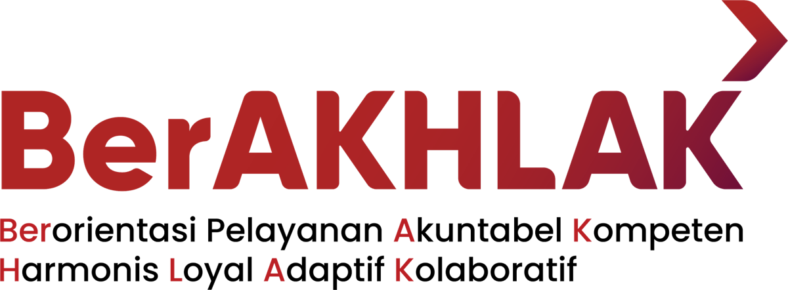
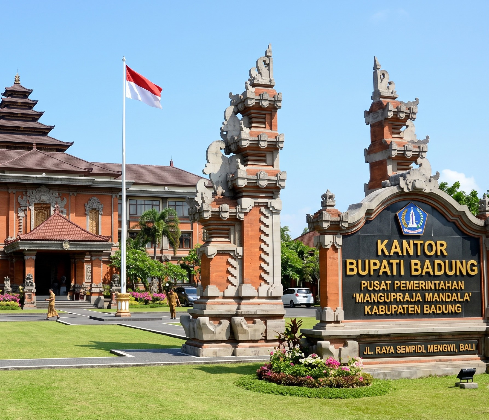
Sistem Informasi Manajemen Formasi dan Organisasi ASN di Kabupaten Badung
LAPORAN
IMPLEMENTASI AKSI PERUBAHAN
SIMFONI ASN
(Sistem Informasi Manajemen Formasi dan Organisasi ASN)
di Kabupaten Badung
Oleh:
I Made Adnyana, S.STP, M.AP.
NIP. 197906101998101001
Badan Kepegawaian dan Pengembangan Sumber Daya Manusia
Kabupaten Badung
PESERTA PELATIHAN KEPEMIMPINAN ADMINISTRATOR ANGKATAN III
BADAN KEPEGAWAIAN DAN PENGEMBANGAN
SUMBER DAYA MANUSIA PROVINSI BALI
TAHUN 2026
LEMBAR PERSETUJUAN
LAPORAN AKSI PERUBAHAN KINERJA ORGANISASI
| Judul Rancangan | : | SIMFONI ASN “Sistem Informasi Manajemen Formasi dan Organisasi ASN” |
| Nama | : | I Made Adnyana, S.STP, M.AP |
| NIP. | : | 197906101998101001 |
| Jabatan | : | Kepala Bidang Pengadaan, Pemberhentian dan Informasi Kepegawaian ASN |
| Unit Kerja | : | Badan Kepegawaian dan Pengembangan Sumber Daya Manusia Kabupaten Badung |
Disetujui untuk disampaikan pada Seminar Laporan Aksi Perubahan (LAP) Kinerja Organisasi Pelatihan Kepemimpinan Administrator (PKA) Angkatan III di Badan Kepegawaian dan Pengembangan Sumber Daya Manusia Provinsi Bali Tahun 2025 yang dilaksanakan pada hari Senin, tanggal 19 Oktober 2026.
LEMBAR PENGESAHAN
LAPORAN AKSI PERUBAHAN KINERJA ORGANISASI
| Judul | : | SIMFONI ASN “Sistem Informasi Manajemen Formasi dan Organisasi ASN” |
| Nama | : | I Made Adnyana, S.STP, M.AP |
| NIP. | : | 197906101998101001 |
| Pangkat/Golongan | : | Pembina (IV/a) |
| Jabatan | : | Kepala Bidang Pengadaan, Pemberhentian dan Informasi Kepegawaian ASN |
| Unit Kerja | : | Badan Kepegawaian dan Pengembangan Sumber Daya Manusia Kabupaten Badung |
Telah diseminarkan dan disempurnakan berdasarkan masukan dari Penguji, Coach dan Mentor pada hari Senin, tanggal 19 Oktober 2026.
PERNYATAAN KEASLIAN NASKAH
Saya yang bertanda tangan di bawah ini:
| Nama | : | I Made Adnyana, S.STP, M.AP |
| NIP. | : | 197906101998101001 |
| Pangkat/Golongan | : | Pembina (IV/a) |
| Jabatan | : | Kepala Bidang Pengadaan, Pemberhentian dan Informasi Kepegawaian ASN |
| Unit Kerja | : | Badan Kepegawaian dan Pengembangan Sumber Daya Manusia Kabupaten Badung |
Menyatakan bahwa, laporan Aksi Perubahan Kinerja Organisasi ini (Angkatan III Tahun 2026) adalah asli dan belum pernah dipublikasikan. Referensi yang digunakan dalam laporan ini dicantumkan sumbernya dengan jelas dan terdapat dalam daftar Pustaka.
Demikian pernyataan ini saya buat dengan sesungguhnya. Apabila di kemudian hari terdapat penyimpangan dan ketidaksesuaian dalam pernyataan ini, maka saya bersedia menerima sanksi sesuai dengan aturan yang berlaku di Badan Kepegawaian dan Pengembangan Sumber Daya Manusia Provinsi Bali.
Puji syukur kami panjatkan kehadapan Ida Sang Hyang Widhi Wasa/Tuhan Yang Maha Esa, karena berkat Asung Kerta Wara Nugraha-Nya, Penulis akhirnya dapat menyelesaikan penyusunan Laporan Aksi Perubahan dengan judul SIMFONI ASN “Sistem Informasi Manajemen Formasi dan Organisasi ASN” sebagai rangkaian kurikulum Pelatihan Kepemimpinan Administrator (PKA) Angkatan III Tahun 2026, yang dilaksanakan di UPT Pengembangan Kompetensi Sumber Daya Manusia pada Badan Kepegawaian dan Pengembangan Sumber Daya Manusia Provinsi Bali Tahun 2026.
Rancangan Aksi Perubahan (LAP) ini lahir dari semangat untuk menghadirkan inovasi serta memberikan kontribusi nyata dalam pengelolaan data Aparatur Sipil Negara (ASN), khususnya di lingkungan Badan Kepegawaian dan Pengembangan Sumber Daya Manusia Kabupaten Badung. Perubahan dan pembaruan dalam tata kelola data ASN merupakan tuntutan zaman, mengingat dinamika lingkungan strategis yang begitu cepat dan kompleks. Kehadiran Rancangan Aksi Perubahan ini diharapkan dapat menjadi salah satu upaya kecil namun bermakna dalam mewujudkan ASN yang profesional, berintegritas, adaptif, serta mampu memberikan pelayanan terbaik kepada masyarakat.
Tersusunnya Laporan Aksi Perubahan ini tentu bukanlah hasil kerja pribadi semata. Banyak pihak yang telah memberikan dorongan, dukungan, motivasi dan doa yang tiada henti baik secara langsung maupun tidak langsung. Oleh karena itu, dengan segala hormat dan kerendahan hati, Penulis menyampaikan penghargaan dan terima kasih kepada:
Bupati Badung, Bapak I Wayan Adi Arnawa melalui BKPSDM Kabupaten Badung beserta jajaran yang telah memberikan kesempatan dan dukungan penuh kepada Penulis untuk mengikuti Pelatihan Kepemimpinan Administrator.
Kepala Badan Kepegawaian dan Pengembangan Sumber Daya Manusia Provinsi Bali beserta seluruh jajaran atas fasilitasi, dukungan dan penyelenggaraan PKA Angkatan III Tahun 2026.
Kepala Badan Kepegawaian dan Pengembangan Sumber Daya Manusia Kabupaten Badung selaku mentor yang selalu memberikan arahan, masukan, dan motivasi dalam setiap proses penyusunan Laporan Aksi Perubahan ini.
Bapak I Made Gde Partha Kesuma Setiawan, S.STP., M.Si., selaku coach, yang dengan ketulusan, kesabaran, serta dedikasi tinggi senantiasa memberikan bimbingan, motivasi, inspirasi dan pendampingan, sehingga RAP ini dapat terselesaikan dengan baik.
Bapak/Ibu Widyaiswara yang telah memberikan ilmu, arahan, serta wawasan yang sangat berharga selama proses pembelajaran berlangsung.
Teman-teman Peserta Pelatihan Kepemimpinan Administrator Angkatan III Tahun 2026 yang selalu menjadi sumber semangat, berbagi pengalaman, serta menciptakan suasana kebersamaan yang hangat dan penuh kekeluargaan.
Penulis menyadari sepenuhnya bahwa karya sederhana ini masih jauh dari sempurna. Masih terdapat kekurangan baik dalam hal penyajian ide maupun sistematika penulisan. Oleh karena itu, Penulis mengharapkan adanya kritik, saran, maupun masukan yang bersifat membangun sebagai bahan perbaikan dan penyempurnaan Laporan Aksi Perubahan.
Akhir kata, besar harapan Penulis agar Laporan Aksi Perubahan SIMFONI ASN “Sistem Informasi Manajemen Formasi dan Organisasi ASN” ini dapat memberikan manfaat, menjadi inspirasi, serta mampu memberikan kontribusi nyata dalam meningkatkan kualitas data ASN, khususnya di Kabupaten Badung, serta mendukung terciptanya birokrasi yang profesional, adaptif, dan berorientasi pada pelayanan publik yang prima. Terima kasih.
Penyelenggaraan manajemen Aparatur Sipil Negara (ASN) saat ini dituntut semakin adaptif, profesional, berbasis data, dan mendukung pengambilan keputusan yang cepat, tepat, serta akuntabel. Perubahan regulasi kepegawaian, penerapan Sistem Merit, transformasi digital pemerintahan melalui Sistem Pemerintahan Berbasis Elektronik (SPBE), serta meningkatnya tuntutan kualitas pelayanan publik mendorong setiap instansi pemerintah untuk memperkuat tata kelola manajemen ASN secara terintegrasi.
Kabupaten Badung sebagai daerah dengan tingkat perkembangan ekonomi dan pelayanan publik yang tinggi menghadapi tantangan dalam memenuhi kebutuhan ASN yang sesuai dengan beban kerja dan dinamika organisasi. Ketersediaan data formasi, bezetting, dan kebutuhan pegawai yang belum terintegrasi secara optimal antar perangkat daerah berpotensi menimbulkan ketidaksesuaian antara jumlah pegawai yang tersedia dengan kebutuhan organisasi.
BKPSDM Kabupaten Badung telah memiliki Sistem Informasi Manajemen Kepegwaian Terintegrasi (SIPETIR) sebagai sistem informasi pelayanan kepegawaian. SIPETIR merupakan suatu sistem yang melakukan pengolahan dan pengelolaan data serta memberikan layanan kepegawaian seperti mengumpulkan, memproses, menyimpan, dan mendistribusikan informasi dan layanan kepegawaian yang ada di dalam organisasi dan di luar organisasi dalam hal ini adalah pemerintah Kabupaten Badung dan diluar pemerintah Kabupaten Badung yang nantinya akan dibutuhkan dalam pengambilan keputusan akhir oleh Pejabat Pembina Kepegawaian (Bupati). Namun demikian, sistem tersebut belum mampu menyediakan informasi strategis mengenai kondisi formasi, bezetting, maupun analisis kebutuhan ASN berdasarkan peta jabatan secara real time. Akibatnya, Akibatnya, proses penyusunan kebutuhan ASN masih memerlukan pengolahan data secara manual melalui aplikasi spreadsheet, sehingga memerlukan waktu yang relatif lama, berpotensi menimbulkan inkonsistensi data, serta menyulitkan pimpinan dalam menentukan kebijakan pengadaan, mutasi, promosi, redistribusi pegawai maupun pengembangan kompetensi ASN.
Sebagai perangkat daerah yang memiliki tugas dalam pengelolaan manajemen ASN, Badan Kepegawaian dan Pengembangan Sumber Daya Manusia (BKPSDM) Kabupaten Badung memegang peranan penting dalam memastikan tersedianya data kepegawaian yang valid sebagai dasar pengambilan kebijakan
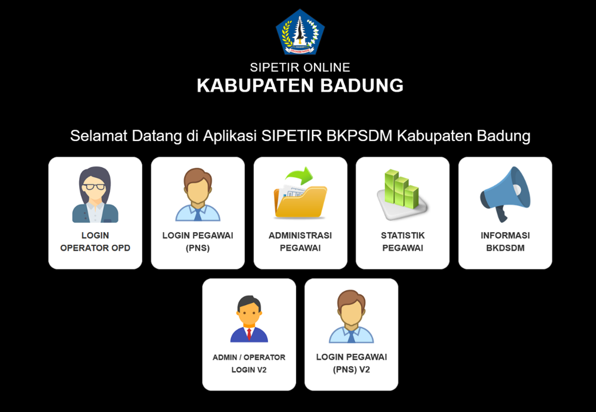
Kondisi tersebut menunjukkan adanya kesenjangan antara kondisi aktual dengan kondisi ideal manajemen ASN yang diharapkan. Oleh karena itu, sebagai implementasi kepemimpinan perubahan dalam Pelatihan Kepemimpinan Administrator, penulis menggagas inovasi SIMFONI ASN (Sistem Informasi Manajemen Formasi dan Organisasi ASN) melalui Pengembangan Modul Formasi, Bezetting, dan Analisis Kebutuhan ASN berbasis Peta Jabatan pada SIPETIR.
Rancangan Aksi Perubahan ini diharapkan mampu meningkatkan kualitas pengambilan keputusan dalam penyusunan kebutuhan ASN, memperkuat implementasi Sistem Merit, meningkatkan efektivitas perencanaan SDM Aparatur, serta mendukung terwujudnya tata kelola pemerintahan yang akuntabel dan berbasis digital.
Melalui kepemimpinan sebagai Pejabat Administrator, Kepala Bidang Pengadaan, Pemberhentian dan Informasi Kepegawaian Apatur Sipil Negara (PPIK) berperan menetapkan arah kebijakan pengembangan SIMFONI ASN agar selaras dengan visi dan misi Pemerintah Kabupaten Badung serta mendukung reformasi birokrasi dan Sistem Pemerintahan Berbasis Elektronik (SPBE). Pengembangan modul Formasi, Bezetting, dan Analisis Kebutuhan ASN diarahkan untuk menghasilkan data kepegawaian yang akurat sebagai dasar penyusunan kebijakan manajemen ASN berbasis peta jabatan.
Nantinya Bidang PPIK juga mentransformasikan proses bisnis pengelolaan data ASN menjadi lebih terintegrasi, akurat, cepat, dan berbasis peta jabatan. Keberhasilan pengembangan SIMFONI ASN sangat bergantung pada kolaborasi lintas perangkat daerah. Kabid PPIK mengoordinasikan seluruh stakeholder agar memiliki persepsi yang sama mengenai pengelolaan data formasi, bezetting, dan kebutuhan ASN tidak saja di internal BKPSDM akan tetapi juga lintas sektor seperti Dinas Komunikasi dan Informatika Kabupaten Badung, seluruh perangkat Daerah melalui pejabat yang menangani kepegawaian serta Kantor Regional X BKN Denpasar.
Hasil akhirnya adalah tersedianya SIMFONI ASN sebagai sistem pendukung keputusan (decision support system) yang mampu menyediakan informasi mengenai formasi, bezetting, dan analisis kebutuhan ASN secara real time, sehingga meningkatkan kualitas perencanaan ASN di Kabupaten Badung serta mendukung terwujudnya tata kelola pemerintahan yang profesional, adaptif, dan berbasis data.
Rancangan Aksi Perubahan ini bertujuan untuk mewujudkan SIMFONI ASN berupa pengembangan Modul Formasi, Bezetting, dan Analisis Kebutuhan ASN berbasis Peta Jabatan pada SIPETIR BKPSDM Kabupaten Badung sebagai dasar pengambilan keputusan manajemen ASN yang lebih akurat, terintegrasi, adaptif, dan berbasis data. Tujuan aksi perubahan ini dibagi ke dalam tiga tahapan waktu berdasarkan durasi pelaksanaan dan hasil yang ingin dicapai, yaitu:
a. Tujuan Jangka Pendek (Agustus 2026 - Oktober 2026): Fokus membangun fondasi perubahan yang bertujuan mewujudkan prototipe SIMFONI ASN yang mampu menampilkan data formasi, bezetting, dan analisis kebutuhan ASN berbasis peta jabatan sebagai dasar pengambilan keputusan manajemen ASN sekaligus uji coba SIMFONI ASN di BKPSDM Kabupaten Badung dan beberapa perangkat daerah.
b. Tujuan Jangka Menengah (6-12 bulan): Mengimplementasikan SIMFONI ASN pada seluruh perangkat daerah dalam penyusunan kebutuhan ASN Kabupaten Badung.
c. Tujuan Jangka Panjang (lebih dari 1 tahun): Menjadikan SIMFONI ASN sebagai sistem utama dalam penyusunan kebutuhan ASN Kabupaten Badung.
a. Manfaat terhadap kinerja organisasi: Implementasi SIMFONI ASN akan meningkatkan efektivitas tata kelola manajemen ASN di BKPSDM Kabupaten Badung melalui penyediaan data formasi, bezetting, dan analisis kebutuhan ASN yang terintegrasi dalam satu sistem berbasis peta jabatan. Selama ini proses perencanaan kebutuhan pegawai masih dilakukan secara parsial, sehingga membutuhkan waktu yang lama dan berpotensi menghasilkan data yang kurang sinkron.
b. Manfaat terhadap stakeholders internal: Stakeholder internal dalam hal ini meliputi BKPSDM, seluruh Perangkat Daerah, pimpinan daerah, serta pejabat pengelola kepegawaian memperoleh data real time untuk mendukung perencanaan serta pengambilan keputusan.
c. Manfaat terhadap stakeholders eksternal: Stakeholders eksternal dalam hal ini BKN, Kementerian PANRB, DPRD, dan masyarakat memperoleh manfaat berupa data yang lebih valid, transparansi yang lebih baik, dan peningkatan kualitas pelayanan publik.
d. Manfaat kuantitatif: Pengurangan waktu proses hingga 60-80%, akurasi data lebih dari 95%, seluruh perangkat daerah terintegrasi, serta tersedianya SIMFONI ASN dalam SIPETIR .
e. Manfaat kualitatif: Meningkatkan akuntabilitas, transparansi, efisiensi, implementasi Sistem Merit, kolaborasi lintas perangkat daerah dan mendukung transformasi digital Pemerintah Kabupaten Badung.
Ruang lingkup aksi perubahan ini difokuskan pada transformasi pengelolaan data kepegawaian melalui pengembangan modul baru pada Sistem Informasi Manajemen Kepegawaian Terintegrasi (SIPETIR) BKPSDM Kabupaten Badung, yang mampu menyediakan informasi kepegawaian secara terintegrasi, akurat, dan real time sebagai dasar penyusunan kebijakan manajemen ASN. Pengembangan sistem dilakukan dengan memanfaatkan data peta jabatan sebagai acuan utama dalam menghitung kebutuhan dan ketersediaan pegawai pada setiap perangkat daerah.
BKPSDM Kabupaten Badung dibentuk berdasarkan Peraturan Daerah Kabupaten Badung Nomor 20 Tahun 2016 tentang Pembentukan dan Susunan Kerja Perangkat Daerah Kabupaten Badung. Berdasarkan Peraturan Bupati Badung Nomor 33 Tahun 2021 tentang Kedudukan, Susunan Organisasi, Tugas dan Fungsi serta Tata Kerja Perangkat Daerah dimana telah diubah beberapa kali yang terakhir dengan Peraturan Bupati Badung Nomor 17 Tahun 2024
tentang Perubahan Ketiga Atas Peraturan Bupati Badung Nomor 33 Tahun 2021. Dalam mewujudkan tata kelola daerah, kinerja organisasi BKPSDM juga diarahkan untuk menyukseskan Visi Kabupaten Badung Tahun 2026, yaitu: "Mewujudkan Pariwisata Badung yang Berkualitas Berlandaskan Nilai-Nilai Nangun Sat Kerthi Loka Bali." Guna mencapai visi tersebut, BKPSDM secara spesifik mengampu misi yang ke-6 "Mewujudkan Tata Kelola Pemerintahan yang Transparan, Akuntabel, dan Professional Berbasis Kompetensi dan Digitalisasi." Misi tersebut mengamanatkan terwujudnya tata kelola pemerintahan yang efektif, transparan, inovatif, dan berorientasi pada pelayanan publik. Untuk mewujudkan misi tersebut diperlukan pengelolaan sumber daya aparatur yang profesional, didukung oleh data ASN yang akurat, mutakhir, dan dapat dipertanggungjawabkan sebagai dasar penyusunan kebijakan dan pengambilan keputusan.
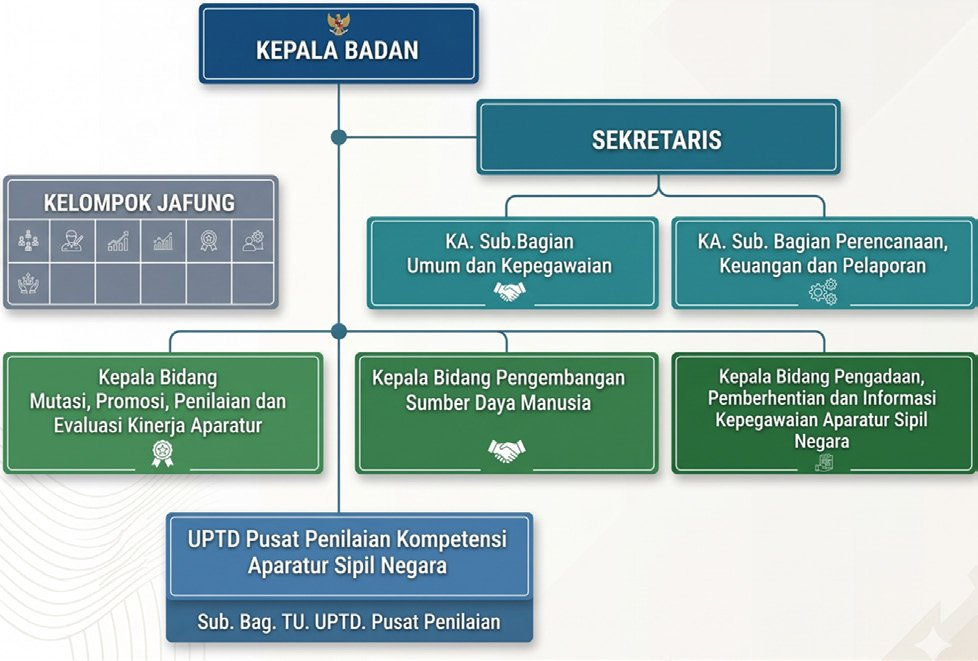
Berdasarkan Lampiran Peraturan Bupati Badung Nomor 33 Tahun 2021 tentang Kedudukan, Susunan Organisasi, Tugas dan Fungsi serta Tata Kerja Perangkat Daerah dimana telah diubah beberapa kali yang terakhir dengan Peraturan Bupati Badung Nomor 17 Tahun 2024 tentang Perubahan Ketiga Atas Peraturan Bupati Badung Nomor 33 Tahun 2021 tentang Kedudukan, Susunan Organisasi, Tugas dan Fungsi serta Tata Kerja Perangkat Daerah, struktur organisasi BKPSDM Kabupaten Badung digambarkan pada Gambar 2.1.
Kinerja sebuah organisasi tidak lepas dari sumber daya yang dimiliki organisasi tersebut. Demikian pula dengan BKPSDM Kabupaten Badung, untuk mencapai pelayanan yang prima dalam pelaksanaannya didukung dengan sejumlah program kegiatan, serta didukung pula dengan sejumlah sumber daya manusia yang dapat dilihat dari tabel di bawah ini:
| NO | GOLONGAN | JUMLAH |
|---|---|---|
| 1 | Golongan IV | 13 Orang |
| 2 | Golongan III | 44 Orang |
| 3 | Golongan II | 1 Orang |
| 4 | PPPK | 30 Orang |
| Jumlah | 88 Orang | |
Project Leader sebagai Kepala Bidang Pengadaan, Pemberhentian dan Informasi Kepegawaian ASN mempunyai tugas antara lain:
Dari uraian tugas di atas, Bidang Pengadaan, Pemberhentian dan Informasi Kepegawaian ASN (PPIK) merupakan unit strategis di BKPSDM Kabupaten Badung yang berperan sebagai core engine dalam tata kelola manajemen ASN. Bidang ini menjadi pusat pengelolaan data kepegawaian, perencanaan kebutuhan ASN, pelaksanaan pengadaan ASN, administrasi pemberhentian, serta pengembangan sistem informasi kepegawaian yang terintegrasi. Melalui SIMFONI ASN, Bidang PPIK tidak hanya berfungsi sebagai pelaksana administrasi kepegawaian, tetapi juga menjadi pusat penyedia data strategis yang menghasilkan informasi kepegawaian secara akurat, mutakhir, dan terintegrasi.
Analisis masalah adalah proses identifikasi masalah sampai penentuan strategi kreatif yang tepat dalam memecahkan masalah. Berikut tahap analisis masalah pada Bidang Pengadaan, Pemberhentian dan Informasi Kepegawaian ASN pada BKPSDM Kabupaten Badung:
Analisis GAP (Gap Analysis) adalah suatu metode yang digunakan untuk mengidentifikasi kesenjangan atau gap antara kondisi sekarang dengan kondisi yang diinginkan. Tujuan utama dari analisis GAP adalah untuk menemukan area yang perlu diperbaiki atau diperbarui agar dapat mencapai tujuan atau kinerja yang lebih baik. Berikut adalah analisis GAP dalam bentuk tabel untuk isu-isu berikut:
| No. | Isu Strategis | Kondisi Saat Ini | Kondisi yang Diharapkan | Gap (Kesenjangan) |
|---|---|---|---|---|
| 1 | Belum optimalnya pemanfaatan teknologi informasi dalam monitoring dan penyelesaian data ASN. | Perencanaan kebutuhan ASN berkaitan dengan formasi dan bezetting, masih dilakukan dengan manual. | Seluruh perangkat daerah memiliki data formasi dan bezetting, yang akurat, dan mutakhir perangkat daerah. | Belum tersedia sistem informasi terkait dengan data formasi, besetting dan kebutuhan ASN. |
| 2 | Masih adanya perbedaan data ASN antara di SIPETIR dengan perangkat daerah. | Pemutakhiran data belum dilakukan secara konsisten | Data ASN di perangkat daerah sinkron, dengan data SIPETIR yang dikelola BKPSDM. | Belum menampilkan informasi keadaan ASN secara real time. |
| No. | Isu Strategis | Kondisi Saat Ini | Kondisi yang Diharapkan | Gap (Kesenjangan) |
|---|---|---|---|---|
| 3 | Belum optimalnya koordinasi antara BKPSDM dan perangkat daerah dalam pemutakhiran data ASN | Koordinasi dalam penyampaian data kebutuhan pegawai belum optimal | Terjalin komunikasi yang efektif antara BKPSDM dan perangkat daerah | Perlunya peningkatan instensitas dalam melakukan koordinasi dan validasi data ASN. |
| 4 | Masih rendahnya kesadaran ASN dalam melakukan pemutakhiran data Kepegawaian secara mandiri dan berkelanjutan | Data ASN di SIPETIR belum lengkap | Data ASN pada SIPETIR lengkap dan akurat | Perlunya peningkatan kompetensi dan kesadaran ASN dalam pemuktahiran data ASN di SIPETIR |
Analisis APKL adalah metode identifikasi isu yang digunakan untuk menilai suatu permasalahan berdasarkan aspek Aktual, Problematik, Kekhalayakan, dan Layak. Analisis ini berfungsi untuk menyaring dan menetapkan isu-isu yang valid sehingga dapat dijadikan dasar dalam menentukan prioritas permasalahan yang akan ditangani melalui aksi perubahan. Analisis APKL ini berdasarkan kriteria penilaian sebagai berikut:
a. Aktual (A): Isu yang sedang terjadi atau dalam proses kejadian, sedang hangat dibicarakan oleh masyarakat, atau diperkirakan akan terjadi dalam waktu dekat. Isu tersebut masih relevan dan menjadi perhatian, bukan merupakan isu yang telah berlalu atau tidak lagi mendapat perhatian.
b. Problematik (P): Isu yang menyimpang dari kondisi yang diharapkan, standar, atau ketentuan yang berlaku sehingga menimbulkan permasalahan yang perlu segera diidentifikasi penyebabnya dan dicarikan alternatif penyelesaiannya.
c. Kekhalayakan (K): Isu yang berdampak luas terhadap kepentingan masyarakat atau organisasi, menyangkut hajat hidup banyak orang, serta memberikan pengaruh yang signifikan, bukan hanya berdampak pada individu atau kelompok tertentu.
d. Layak (L): Isu yang logis, realistis, dan sesuai untuk dibahas karena berada dalam ruang lingkup tugas, fungsi, kewenangan, dan tanggung jawab organisasi maupun pejabat yang bersangkutan.
Hasil dari analisis APKL berdasarkan isu-isu yang ada dapat dijelaskan seperti tabel di bawah ini:
| No. | Isu | A | P | K | L | Ket. |
|---|---|---|---|---|---|---|
| 1 | Belum optimalnya pemanfaatan teknologi informasi dalam monitoring dan penyelesaian data ASN. | √ | √ | √ | √ | Valid |
| 2 | Masih adanya perbedaan data ASN antara di SIPETIR dengan perangkat daerah. | √ | √ | √ | √ | Valid |
| 3 | Belum optimalnya koordinasi antara BKPSDM dan perangkat daerah dalam pemutakhiran data ASN. | √ | √ | √ | √ | Valid |
| 4 | Masih rendahnya kesadaran ASN dalam melakukan pemutakhiran data kepegawaian secara mandiri dan berkelanjutan. | √ | √ | √ | √ | Valid |
Hasil analisis AKPL menghasilkan seluruh masalah yang diidentifikasi valid atau memenuhi syarat.
Untuk menemukan prioritas isu, maka dilakukan dengan teknik USG. Analisis Urgency, Seriousness, Growth (USG) adalah salah satu metode skoring untuk menyusun urutan prioritas isu yang harus diselesaikan. Pada tahap ini masing-masing masalah dinilai tingkat risiko dan dampaknya. Apabila telah didapatkan jumlah skor, maka dapat menentukan prioritas masalah. Metode USG dapat dijabarkan sebagai berikut:
Penggunaan teknik USG dapat dilihat pada tabel berikut:
| No. | Isu | Analisis | Jumlah | Ranking | ||
|---|---|---|---|---|---|---|
| U | S | G | ||||
| 1 | Belumoptimalnya pemanfaatanteknologi informasi dalam monitoring dan penyelesaian data ASN. | 5 | 5 | 4 | 14 | I |
| 3 | Masih adanya perbedaan data ASN antara di SIPETIR dengan perangkat daerah. | 4 | 5 | 4 | 13 | II |
| 2 | Belum optimalnya koordinasi antara BKPSDM dan perangkat daerah dalam pemutakhiran data ASN. | 4 | 4 | 4 | 12 | III |
| 4 | Masih rendahnya kesadaran ASN dalam melakukan pemutakhiran data kepegawaian secara mandiri dan berkelanjutan. | 4 | 4 | 3 | 11 | IV |
Keterangan:
Uraian Analisis: Berdasarkan hasil analisis USG, diperoleh empat isu strategis yang berkaitan dengan tata kelola data SIPETIR di BKPSDM Kabupaten Badung. Hasil penilaian menunjukkan bahwa isu " Belum optimalnya pemanfaatan teknologi informasi dalam monitoring dan penyelesaian data ASN " memperoleh nilai tertinggi, yaitu 14 (Urgency = 5, Seriousness = 5, Growth = 4), sehingga ditetapkan sebagai isu prioritas utama. Isu tersebut dinilai sangat mendesak karena tingginya tuntutan terhadap pelayanan terkait data ASN dalam hal perencanaan, formasi, beztting dan kebutuhan ASN yang akurat dan berbasis digital. Dari aspek seriousness, belum optimalnya pemanfaatan teknologi berdampak pada belum efisiennya proses pelayanan terhadap data ASN. Sementara itu, dari aspek growth, apabila kondisi tersebut tidak segera ditangani, maka permasalahan diperkirakan akan semakin berkembang seiring meningkatnya kebutuhan terhadap data ASN, berkaitan dengan pengadaan dan kebutuhan ASN termasuk mutasi serta promosi.
Selanjutnya, isu "Masih adanya perbedaan data ASN antara di sistem dengan perangkat daerah " memperoleh nilai 13, sehingga menempati prioritas berikutnya. Isu tersebut memiliki keterkaitan erat dengan isu utama karena peningkatan pemanfaatan teknologi informasi terutama pengembangan SIMPEG diharapkan dapat mendukung peningkatan kepatuhan sinkronisasi data ASN pada SIMPEG dan perangkat daerah.
Sementara itu isu “Belum optimalnya koordinasi antara BKPSDM dan perangkat daerah dalam pemutakhiran data ASN” dan “Masih rendahnya kesadaran ASN dalam melakukan pemutakhiran data kepegawaian secara mandiri dan berkelanjutan” juga perlu mendapatkan perhatian karena kedua isu tersebut dipandang sebagai dampak maupun aspek pendukung yang dapat ditingkatkan melalui pemanfaatan teknologi informasi berupa pengembangan Formasi, Bezetting, dan Analisis Kebutuhan ASN berbasis Peta Jabatan.
Isu Strategis: "Belum optimalnya pemanfaatan teknologi informasi dalam monitoring dan penyelesaian data ASN"
| Tahapan | Pertanyaan (Why?) | Jawaban |
|---|---|---|
| Why 1 | Mengapa pemanfaatan teknologi informasi dalam monitoring dan penyelesaian data ASN belum optimal? | Karena proses pengelolaan data formasi, bezetting, dan kebutuhan ASN masih dilakukan secara parsial dan belum terintegrasi dalam satu sistem informasi yang komprehensif. |
| Why 2 | Mengapa pengelolaan data masih dilakukan secara parsial? | Karena aplikasi SIMPEG yang ada belum memiliki fitur monitoring formasi, bezetting, analisis kebutuhan ASN, dan keterkaitannya dengan peta jabatan secara real time. |
| Tahapan | Pertanyaan (Why?) | Jawaban |
|---|---|---|
| Why 3 | Mengapa SIMPEG belum memiliki fitur tersebut? | Karena pengembangan sistem informasi kepegawaian selama ini lebih berfokus pada administrasi kepegawaian dan belum diarahkan untuk mendukung perencanaan kebutuhan ASN berbasis data. |
| Why 4 | Mengapa pengembangan sistem belum diarahkan pada perencanaan kebutuhan ASN? | Karena belum terdapat perencanaan transformasi digital yang mengintegrasikan proses bisnis manajemen ASN dengan kebutuhan pengambilan keputusan strategis di bidang kepegawaian. |
| Why 5 | Mengapa belum ada perencanaan transformasi digital yang terintegrasi? | Sumber: Penilaian (2026) Karena belum adanya kebijakan, komitmen lintas perangkat daerah, dan kolaborasi yang kuat dalam pengembangan sistem informasi kepegawaian yang berbasis peta jabatan dan data organisasi. |
Alat analisis SWOT untuk menemukan strategi agar mampu beradaptasi dengan perubahan yang terjadi. Berikut diperlihatkan hasil identifikasi faktor internal dan eksternal.
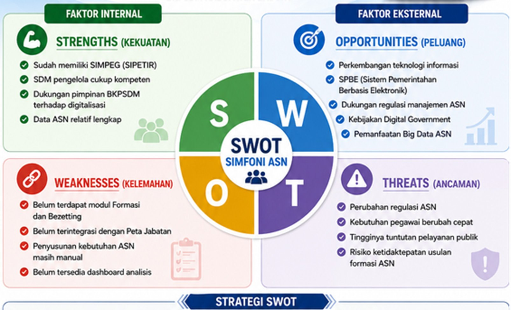
1. Strategi SO (Strengths - Opportunities): Memanfaatkan kekuatan internal untuk meraih peluang eksternal. Memanfaatkan kewenangan BKPSDM dan dukungan pimpinan untuk membuat tata kelola dalam rangka pengambilan keputusan kebutuhan ASN berbasis peta jabatan.
2. Strategi WO (Weaknesses - Opportunities): Mengatasi kelemahan internal dengan memanfaatkan peluang eksternal. Memanfaatkan teknologi informasi dalam penyusunan kebutuhan pengadaan ASN.
3. Strategi ST (Strengths - Threats): Menggunakan kekuatan internal untuk mengatasi ancaman eksternal. Mengoptimalkan sistem informasi kepegawaian dan kewenangan BKPSDM untuk meningkatkan validitas data ASN.
4. Strategi WT (Weaknesses - Threats): Mengurangi kelemahan dan menghindari ancaman. Meningkatkan kualitas data ASN melalui pembentukan mekanisme pengendalian kualitas data, peningkatan kompetensi pengelola data, serta penguatan koordinasi dengan perangkat daerah.
Dari analisis SWOT menghasilkan Strategi ST (Strengths - Threats) yaitu menggunakan kekuatan internal untuk mengatasi ancaman eksternal melalui mengoptimalkan sistem informasi kepegawaian dan kewenangan BKPSDM untuk meningkatkan validitas data ASN.
Sedangkan kalau digambarkan dalam kuadran SWOT seperti dalam gambar 2.3 sebagai berikut:
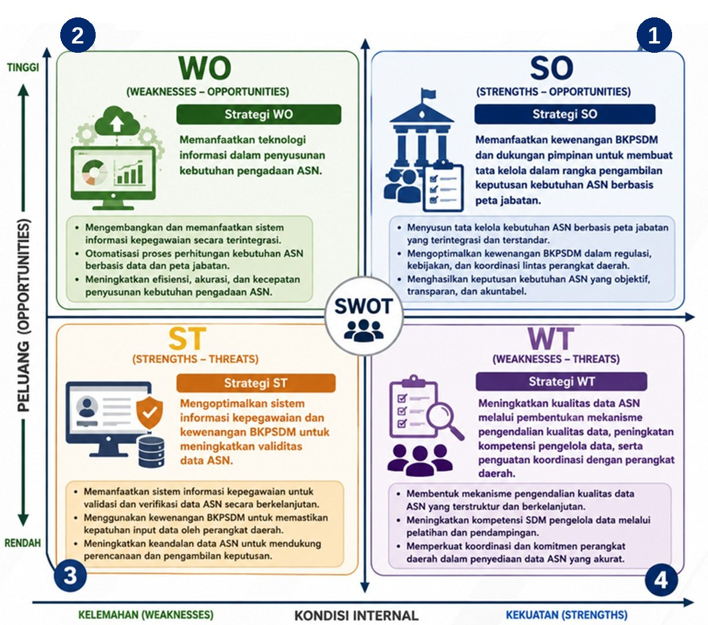
Hasil analisis menunjukkan bahwa posisi organisasi cenderung berada pada Kuadran III (Strength-Threats). Artinya, BKPSDM Kabupaten Badung memanfaatkan seluruh kekuatan internal untuk mengatasi atau menghadapi berbagai ancaman eksternal. Oleh karena itu, strategi yang direkomendasikan adalah Strategi Mobilisasi Internal (Mobilization Strategy) dengan mengoptimalkan kewenangan BKPSDM Badung melalui SIMFONI ASN berupa pengembangan modul internal formasi, bezetting, dan kebutuhan ASN berbasis peta jabatan pada aplikasi SIPETIR guna memperkuat sistem deteksi dini dan memitigasi risiko ketidakvalidan data serta ancaman ketidaksesuaian formasi dengan regulasi nasional.
Dalam perancangan aksi perubahan yang dilakukan, dibutuhkan suatu kerangka berpikir sebagai acuan dalam pelaksanaan kegiatan. Kerangka berpikir merupakan acuan konseptual yang menjelaskan alur logis dalam merancang dan melaksanakan suatu kegiatan. Kerangka ini berfungsi sebagai peta jalan yang menghubungkan visi, misi, tujuan, kondisi saat ini, permasalahan, solusi, hingga hasil yang diharapkan.. Adapun kerangka berpikir dapat dilihat pada gambar di halaman selanjutnya.
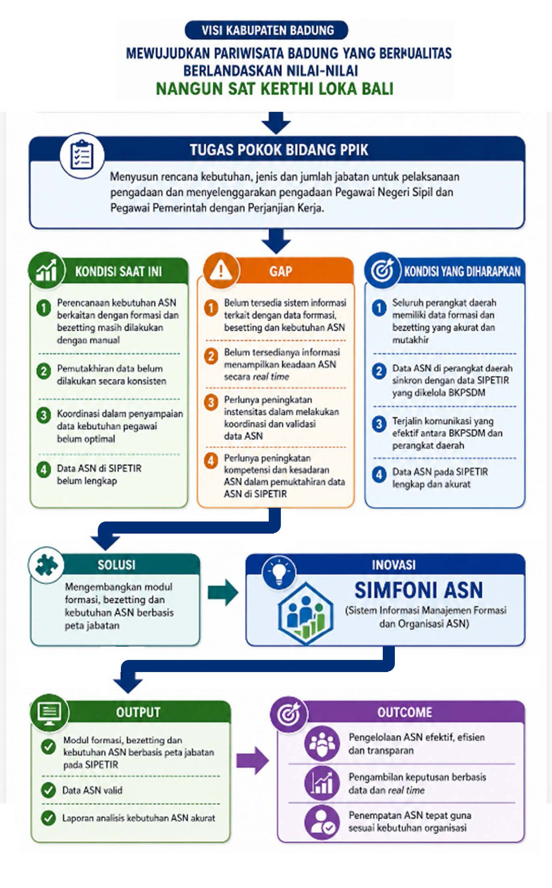
Terobosan inovasi yang diusulkan dalam aksi perubahan ini adalah SIMFONI ASN (Sistem Informasi Manajemen Informasi dan Organisasi) ASN berupa Pengembangan Modul Formasi, Bezetting dan Analisis Kebutuhan ASN Berbasis Peta Jabatan pada SIPETIR. SIMFONI ASN merupakan upaya strategis untuk meningkatkan tata kelola manajemen ASN yang lebih terintegrasi, akurat, adaptif, dan berbasis data. Selama ini SIPETIR telah dimanfaatkan sebagai sistem informasi kepegawaian untuk pengelolaan data administrasi ASN. Namun demikian, sistem tersebut belum memiliki fitur yang mampu mengintegrasikan data formasi, kondisi bezetting (ketersediaan pegawai), serta analisis kebutuhan ASN berdasarkan peta jabatan.
Kondisi tersebut menyebabkan proses perencanaan kebutuhan ASN masih dilakukan secara parsial, memerlukan pengolahan data secara manual, membutuhkan waktu yang relatif lama, serta berpotensi menghasilkan data yang kurang akurat sebagai dasar pengambilan keputusan.
Melalui aksi perubahan ini akan dilakukan pengembangan modul baru pada SIPETIR yang mengintegrasikan tiga komponen utama, yaitu Modul Formasi ASN, Modul Bezetting ASN, dan Modul Analisis Kebutuhan ASN Berbasis Peta Jabatan. Ketiga modul tersebut saling terhubung dalam satu platform sehingga mampu menyajikan informasi secara real time mengenai jumlah kebutuhan pegawai, kondisi pegawai yang tersedia, kekurangan maupun kelebihan pegawai pada setiap perangkat daerah, serta proyeksi kebutuhan ASN sesuai struktur organisasi dan peta jabatan.
Hasil pengolahan data tersebut akan menjadi dashboard pengambilan keputusan (decision support system) bagi pimpinan daerah dan BKPSDM dalam merumuskan kebijakan manajemen ASN, seperti penyusunan usulan formasi ASN, redistribusi pegawai, mutasi, promosi, pengembangan kompetensi, hingga penyusunan kebutuhan ASN jangka menengah dan jangka panjang. Dengan demikian, kebijakan yang dihasilkan tidak lagi hanya berdasarkan usulan masing-masing perangkat daerah, tetapi didukung oleh data yang valid, terintegrasi, dan dapat dipertanggungjawabkan. SIMFONI ASN juga mendukung implementasi Sistem Pemerintahan Berbasis Elektronik (SPBE), Reformasi Birokrasi Tematik, serta kebijakan Manajemen Talenta ASN sebagaimana diamanatkan dalam Undang-Undang Nomor 20 Tahun 2023 tentang Aparatur Sipil Negara. Pengembangan sistem ini diharapkan mampu meningkatkan efektivitas pelayanan kepegawaian, mempercepat proses penyusunan kebutuhan ASN, meningkatkan kualitas data kepegawaian, serta mewujudkan tata kelola pemerintahan yang profesional, akuntabel, dan berbasis digital.
SIMFONI ASN menghadirkan pembaruan melalui pengembangan modul yang sebelumnya belum tersedia dalam sistem kepegawaian BKPSDM Kabupaten Badung, yaitu Modul Formasi, Modul Bezetting, dan Modul Analisis Kebutuhan ASN Berbasis Peta Jabatan yang terintegrasi dalam satu sistem.
Pembaruan tersebut ditandai dengan:
Dengan demikian, inovasi ini tidak sekadar melakukan digitalisasi administrasi, tetapi mentransformasi proses perencanaan kebutuhan ASN menjadi lebih cepat, akurat, dan terintegrasi.
SIMFONI ASN memberikan manfaat nyata bagi organisasi maupun pemangku kepentingan. Bagi BKPSDM, sistem ini meningkatkan efisiensi proses penyusunan kebutuhan ASN, mengurangi pekerjaan manual, mempercepat penyusunan usulan formasi, serta meningkatkan validitas data kepegawaian. Bagi perangkat daerah, sistem menyediakan informasi mengenai kondisi bezetting, kekurangan maupun kelebihan pegawai berdasarkan peta jabatan sehingga memudahkan penyusunan kebutuhan pegawai secara objektif. Bagi pimpinan daerah, dashboard yang tersedia menjadi dasar dalam pengambilan keputusan terkait kebijakan pengadaan ASN, redistribusi pegawai, mutasi, promosi, maupun pengembangan kompetensi secara lebih tepat sasaran.
Pada akhirnya, manfaat tersebut akan meningkatkan kualitas pelayanan publik karena kebutuhan ASN dapat dipenuhi secara lebih proporsional sesuai kebutuhan organisasi.
SIMFONI ASN dirancang agar dapat terus dikembangkan dan dimanfaatkan secara berkelanjutan.
Keberlanjutan inovasi didukung oleh beberapa faktor, antara lain:
Dengan dukungan tersebut, inovasi ini tidak berhenti sebagai proyek perubahan jangka pendek, tetapi menjadi bagian dari sistem kerja BKPSDM dalam pengelolaan manajemen ASN.
Model SIMFONI ASN memiliki potensi tinggi untuk direplikasi oleh pemerintah daerah lain karena konsep yang dibangun bersifat umum dan sesuai dengan proses bisnis manajemen ASN.
Replikasi dapat dilakukan melalui:
Dengan dukungan tersebut, inovasi ini tidak berhenti sebagai proyek perubahan jangka pendek, tetapi menjadi bagian dari sistem kerja BKPSDM dalam pengelolaan manajemen ASN.
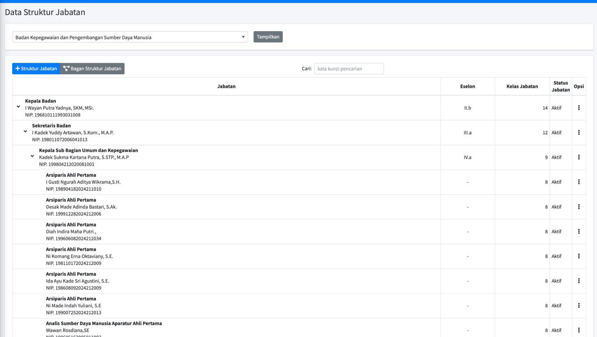
Milestones Aksi Perubahan adalah serangkaian tahapan mulai dari kegiatan persiapan, pelaksanaan hingga monitoring dan evaluasi. Tahapan kegiatan pada aksi perubahan ini dibagi menjadi tiga tahapan, yakni tahap jangka pendek, tahap jangka menengah dan tahap jangka panjang.
| NO | KEGIATAN | 2026 | OUTPUT | PENANGGUNG JAWAB | |||||||||||
|---|---|---|---|---|---|---|---|---|---|---|---|---|---|---|---|
| Agustus | September | Oktober | |||||||||||||
| 1 | 2 | 3 | 4 | 1 | 2 | 3 | 4 | 1 | 2 | 3 | 4 | ||||
| I. PERSIAPAN | |||||||||||||||
| a | Konsultasi awal dan pelaporan kepada mentor | ✓ | Notulen | Project Leader, BKPSDM. | |||||||||||
| b | Rapat persiapan pelaksanaan | ✓ | Notulen | Project Leader dan Tim Kerja | |||||||||||
| c | Pembentukan tim yang efektif | ✓ | Tim Efektif | Project Leader dan Tim Kerja | |||||||||||
| d | Menyusun rencana kerja | ✓ | Rencana Kerja Tim | Project Leader dan Tim Efektif | |||||||||||
| NO | KEGIATAN | 2026 | OUTPUT | PENANGGUNG JAWAB | |||||||||||
|---|---|---|---|---|---|---|---|---|---|---|---|---|---|---|---|
| Agustus | September | Oktober | |||||||||||||
| 1 | 2 | 3 | 4 | 1 | 2 | 3 | 4 | 1 | 2 | 3 | 4 | ||||
| II. PELAKSANAAN | |||||||||||||||
| a | Pelaksanaan FGD dengan Tim Programmer, Tim Kerja & Pejabat Pengelola Kepegawaian PD | ✓ | Notulen | Project Leader, Tim Efektif dan Pejabat Pengelola | |||||||||||
| b | Penyusunan SOP | ✓ | SOP | Project Leader dan Tim Efektif | |||||||||||
| c | Perancangan dan koding modul | ✓ | ✓ | ✓ | ✓ | ✓ | Programmer | ||||||||
| d | Uji coba | ✓ | ✓ | Laporan Uji Coba | Project Leader, Tim Efektif dan Pejabat Pengelola | ||||||||||
| III. EVALUASI | |||||||||||||||
| a | Evaluasi kendala dan hambatan yang dihadapi | ✓ | ✓ | Project Leader dan Tim Efektif | |||||||||||
| NO | KEGIATAN | 2026 | 2027 | OUTPUT | PENANGGUNG JAWAB | ||||
|---|---|---|---|---|---|---|---|---|---|
| NOP | DES | JAN | FEB | MAR | APR | ||||
| 1 | Pelatihan peningkatan kompetensi petugas pengelola sistem pada BKPSDM dan Perangkat Daerah | ✓ | ✓ | Peningkatan Kompetensi petugas pengelola | Project leader dan Tim Efektif | ||||
| 2 | Implementasi sistem pada semua perangkat daerah | ✓ | ✓ | ✓ | ✓ | ✓ | 100% menerapkan SOP baru | Project leader dan Tim Efektif | |
| 3 | Monitoring berkala kepatuhan input data oleh pejabat pengelola kepegawaian | ✓ | ✓ | ✓ | Adanya hasil monitoring kepatuhan penggunaan | Project leader dan Tim Efektif | |||
| NO | KEGIATAN | 2027 BULAN | OUTPUT | PENANGGUNG JAWAB | ||||||||
|---|---|---|---|---|---|---|---|---|---|---|---|---|
| IV | V | VI | VII | VIII | IX | X | XI | XII | ||||
| 1 | Menjadikan SIMFONI ASN sebagai sistem utama dalam penyusunan kebutuhan ASN | ✓ | ✓ | Adanya Sistem Informasi sebagai sistem utama | Project leader, Stakeholder dan Tim Efektif | |||||||
| 2 | Kolaborasi dengan Diskominfo dan Perangkat Daerah Lainnya | ✓ | ✓ | ✓ | ✓ | ✓ | ✓ | ✓ | ✓ | Data ASN Semua PD berbasis digital terintegrasi | Project leader, Stakeholder dan Tim Efektif | |
| 3 | Pemeliharaan dan pengembangan fitur aplikasi | ✓ | ✓ | ✓ | ✓ | ✓ | ✓ | ✓ | ✓ | Aplikasi terpelihara dan berjalan dengan lancar serta aman | Project leader, Stakeholder dan Tim Efektif | |
Rancangan aksi perubahan SIMFONI ASN memerlukan pemanfaatan dan optimalisasi berbagai sumber daya yang tersedia di Badan Kepegawaian dan Pengembangan Sumber Daya Manusia Kabupaten Badung. Sumber daya ini menjadi fondasi awal untuk menjamin kelancaran dan efektivitas program, serta menunjukkan bahwa inovasi yang dirancang berbasis pada potensi internal organisasi. Sumber daya yang dimaksud meliputi:
Sumber Daya Manusia (SDM) Berdasarkan data pada aplikasi data base kepegawaian Badan Kepegawaian dan Pengembangan Sumber Daya Manusia Kabupaten Tabanan yaitu SIPETIR Badan Kepegawaian dan Pengembangan Sumber Daya Manusia didukung dengan 88 orang SDM yang terdiri atas ASN (PNS dan PPPK teknis) serta tenaga non ASN sebagaimana table berikut:
| No. | Jabatan | Eselon | Jumlah |
|---|---|---|---|
| 1 | Kepala Badan | II.b | 1 |
| 2. | Sekretaris | III.a | 1 |
| 3. | Kepala Bidang | III.b | 3 |
| 4. | Kepala UPTD | IV.a | 1 |
| 5. | Kepala Sub. Bagian | IV.a | 2 |
| 6. | Kepala Sub. Bagian UPTD | IV.b | 1 |
| No. | Jabatan | Eselon | Jumlah |
|---|---|---|---|
| 7. | JF Asesor | - | 2 |
| 8. | JF Analis SDM Aparatur | - | 43 |
| 9. | JF Arsiparis | - | 6 |
| 10. | JF Pranata Komputer | - | 4 |
| 11. | Staf PNS | - | 22 |
| 12. | Staf PPPK | - | 2 |
| Jumlah | 88 |
Untuk mencapai tujuan yang diinginkan, tentunya harus didukung oleh sejumlah sumber daya yaitu Stakeholder, Strategi Komunikasi, Tim Efektif,
Selanjutnya stakeholders tersebut di atas dikelompokkan ke dalam kuadran sesuai dengan ciri- ciri sebagai berikut:
a. Promoters memiliki kepentingan besar terhadap upaya dan juga kekuatan untuk membantu membuatnya berhasil. Seluruh pihak yang terlibat langsung dan menerima dampak langsung atas keberhasilan aksi perubahan.
b. Defenders memiliki kepentingan pribadi dan dapat menyuarakan dukungannya dalam komunitas, tetapi kekuatannya kecil untuk memengaruhi upaya.
c. Latents tidak memiliki kepentingan khusus maupun terlibat dalam upaya, tetapi memiliki kekuatan besar untuk memengaruhi upaya (jika mereka tertarik).
d. Apathetics kurang memiliki kepentingan maupun kekuatan, bahkan mungkin tidak mengetahui adanya upaya
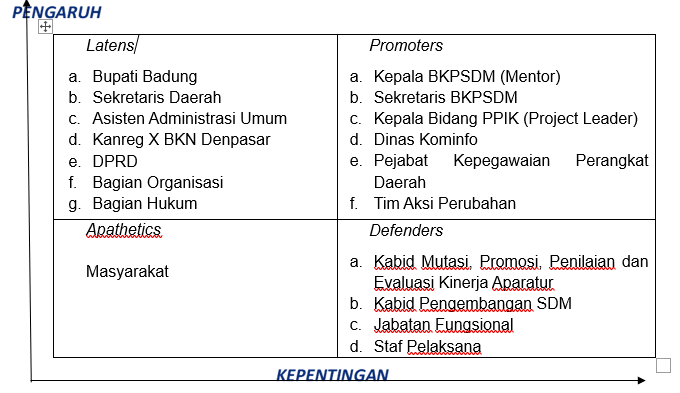
Stakeholder tersebut di atas dikelompokkan ke dalam kuadran sesuai dengan ciri -ciri sebagai berikut
Dalam melaksanakan kegiatan, potensi hambatan atau kendala bisa saja terjadi, untuk itu manajemen resiko perlu dilakukan untuk mengantisipasi kejadian tersebut. Risiko tersebut dapat berasal dari aspek organisasi, sumber daya manusia, proses bisnis, teknologi informasi, maupun dukungan para pemangku kepentingan. Apabila tidak diantisipasi dengan baik, risiko-risiko tersebut dapat memengaruhi keberhasilan implementasi inovasi, efektivitas pelayanan, serta pencapaian tujuan aksi perubahan. Oleh karena itu, diperlukan penerapan manajemen risiko sebagai bagian dari tata kelola pemerintahan yang baik (good governance) untuk mengidentifikasi, menganalisis, mengevaluasi, dan menetapkan langkah-langkah mitigasi terhadap setiap risiko yang mungkin timbul selama proses implementasi aksi perubahan. Melalui penerapan manajemen risiko, diharapkan setiap potensi hambatan dapat dikendalikan sejak dini sehingga pelaksanaan aksi perubahan dapat berjalan secara efektif, efisien, akuntabel, dan berkelanjutan serta memberikan manfaat yang optimal bagi peningkatan kualitas data ASN di Kabupaten Badung.
Adapun identifikasi risiko beserta rencana mitigasi dalam pelaksanaan Rancangan Aksi Perubahan ini disajikan pada tabel manajemen risiko berikut.
| No | Tahapan Kegiatan | Risiko | Penyebab | Kemungkinan | Dampak | Mitigasi/Rencana Tindakan |
|---|---|---|---|---|---|---|
| 1. | Pembentukan Tim Efektif | Tim efektif tidak terbentuk tepat waktu | Kesibukan pimpinan dan anggota tim | Sedang | Sedang | Melakukan koordinasi awal dengan pimpinan dan menyiapkan draft SK sebelum pelaksanaan aksi perubahan. |
| 2 | Koordinasi dengan Stakeholder | Kurangnya komitmen stakeholder | Perbedaan persepsi mengenai tujuan aksi perubahan | Tinggi | Sedang | Melaksanakan sosialisasi, komunikasi intensif, dan meminta komitmen melalui rapat koordinasi. |
| 3 | Pengembangan Modul Formasi | Modul tidak sesuai proses bisnis | Analisis kebutuhan kurang komprehensif | Tinggi | Sedang | Melibatkan Kabid terkait, JF SDM Aparatur, programmer, dan pengguna dalam penyusunan desain sistem. |
| No | Tahapan Kegiatan | Risiko | Penyebab | Kemungkinan | Dampak | Mitigasi/Rencana Tindakan |
|---|---|---|---|---|---|---|
| 4 | Pengembangan Modul Bezetting | Data bezetting tidak akurat | Data ASN belum sinkron | Tinggi | Tinggi | Melakukan validasi dan sinkronisasi data dengan perangkat daerah sebelum migrasi data. |
| 5 | Pengembangan Modul Analisis Kebutuhan ASN | Perhitungan kebutuhan ASN tidak sesuai regulasi | Parameter sistem belum mengikuti ketentuan terbaru | Tinggi | Rendah | Mengacu pada regulasi BKN dan Kementerian PANRB serta melakukan review oleh tim teknis. |
| 6 | Integrasi dengan Peta Jabatan | Data peta jabatan tidak lengkap | Belum dilakukan pemutakhiran data organisasi | Tinggi | Sedang | Berkoordinasi dengan Bagian Organisasi untuk pemutakhiran peta jabatan. |
| No | Tahapan Kegiatan | Risiko | Penyebab | Kemungkinan | Dampak | Mitigasi/Rencana Tindakan |
|---|---|---|---|---|---|---|
| 7 | Penyusunan SOP | SOP tidak dipahami pengguna | Sosialisasi belum optimal | Sedang | Sedang | Menyelenggarakan sosialisasi dan bimbingan teknis penggunaan SOP. |
| 8 | Uji Coba (Pilot Project) | Terjadi error pada aplikasi | Bug sistem dan belum optimalnya pengujian | Sedang | Sedang | Melaksanakan testing berulang (User Acceptance Test/UAT) dan perbaikan sebelum implementasi penuh. |
| 9 | Sosialisasi kepada Perangkat Daerah | Rendahnya partisipasi peserta | Jadwal berbenturan dengan kegiatan OPD | Sedang | Sedang | Menyusun jadwal bersama dan menyediakan materi sosialisasi secara digital. |
| No | Tahapan Kegiatan | Risiko | Penyebab | Kemungkinan | Dampak | Mitigasi/Rencana Tindakan |
|---|---|---|---|---|---|---|
| 10 | Implementasi SIMFONI ASN | Pengguna belum mampu mengoperasikan aplikasi | Kompetensi operator berbeda-beda | Tinggi | Sedang | Menyelenggarakan pelatihan, pendampingan, dan penyusunan buku panduan penggunaan aplikasi. |
| 11 | Migrasi Data | Kehilangan atau kerusakan data | Kesalahan proses migrasi | Tinggi | Rendah | Melakukan backup database sebelum migrasi serta pengujian hasil migrasi. |
| 12 | Operasional Sistem | Gangguan server atau jaringan | Infrastruktur TI mengalami gangguan | Tinggi | Sedang | Berkoordinasi dengan Dinas Kominfo, melakukan backup server, dan monitoring sistem secara berkala. |
| 13 | Keberlanjutan Inovasi | Pengembangan sistem berhenti setelah proyek selesai | Tidak tersedia dukungan anggaran dan kebijakan | Tinggi | Sedang | Mengintegrasikan SIPETIR ke dalam program kerja BKPSDM, mengusulkan anggaran pengembangan, serta menetapkan kebijakan melalui SOP dan keputusan Kepala BKPSDM. |
Terwujudnya aksi perubahan ini sangat tergantung pada kerjasama seluruh stakeholder yang terlibat dalam kegiatan tersebut. Namun perlu diantisipasi faktor pihak yang terdampak dan cara pengembangan Kompetensi pada pelaksanaan aksi perubahan ini sebagai berikut:
| No. | Stakeholder | Pengaruh | Kepentingan | Kuadran | Peran dalam Proyek | Strategi Keterlibatan |
|---|---|---|---|---|---|---|
| 1 | Bupati Badung | Tinggi | Sedang | Latents | Memberikan dukungan kebijakan strategis terhadap transformasi digital manajemen ASN | Audiensi penyampaian executive summary, dan pelaporan capaian proyek secara berkala |
| 2 | Sekretaris Daerah Kabupaten Badung | Tinggi | Tinggi | Promoters | Pengarah implementasi lintas perangkat daerah serta mendorong kolaborasi | Koordinasi intensif, paparan perkembangan proyek dan konsultasi kebijakan |
| 3 | Asisten Administrasi Umum Sekda | Tinggi | Sedang | Latents | Memfasilitasi koordinasi administrasi antar perangkat daerah | Rapat koordinasi, dan penyampaian progres implementasi |
| No. | Stakeholder | Pengaruh | Kepentingan | Kuadran | Peran dalam Proyek | Strategi Keterlibatan |
|---|---|---|---|---|---|---|
| 4 | Kepala BKPSDM (Mentor) | Tinggi | Tinggi | Promoters | Mentor, pemberi arahan strategis, persetujuan kebijakan | Konsultasi rutin, laporan mingguan, monitoring dan evaluasi milestone |
| 5 | Sekretaris BKPSDM | Sedang | Tinggi | Promoters | Mendukung administrasi, anggaran, dan koordinasi internal BKPSDM | Koordinasi rutin dan pelibatan dalam penyusunan SOP serta monitoring |
| 6 | Kepala Bidang PPIK (Project Leader) | Tinggi | Tinggi | Promoters | Memimpin, mengoordinasikan, mengendalikan, dan memastikan seluruh aksi perubahan berjalan sesuai target | Memimpin rapat, koordinasi harian, monitoring, evaluasi, dan pengambilan keputusan operasional |
| No. | Stakeholder | Pengaruh | Kepentingan | Kuadran | Peran dalam Proyek | Strategi Keterlibatan |
|---|---|---|---|---|---|---|
| 7 | Kepala Bidang Mutasi, Promosi Penilaian dan Evaluasi Kinerja Aparatur | Sedang | Tinggi | Defenders | Memberikan masukan terkait pemanfaatan data untuk mutasi, promosi, dan evaluasi kinerja ASN | Focus Group Discussion (FGD), koordinasi teknis, dan uji coba sistem |
| 8 | Kepala Bidang Pengembangan SDM | Sedang | Tinggi | Defenders | Memanfaatkan hasil analisis kebutuhan ASN sebagai dasar pengembangan kompetensi. | Koordinasi teknis dan sinkronisasi kebutuhan pengembangan ASN. |
| 9 | Jabatan Fungsional BKPSDM | Sedang | Tinggi | Defenders | Penyusun analisis jabatan, validasi data, dan penyusunan kebutuhan ASN. | Pelibatan dalam penyusunan modul, validasi data, serta bimbingan teknis. |
| No. | Stakeholder | Pengaruh | Kepentingan | Kuadran | Peran dalam Proyek | Strategi Keterlibatan |
|---|---|---|---|---|---|---|
| 10 | Staf Pelaksana BKPSDM | Rendah | Tinggi | Defenders | Operator sistem, input data, pengujian dan administrasi aplikasi. | Pelatihan, pendampingan, coaching, dan monitoring pelaksanaan. |
| 11 | Dinas Komunikasi dan Informatika Kabupaten Badung | Tinggi | Tinggi | promoters | Mendukung pengembangan aplikasi, integrasi sistem, keamanan data, dan infrastruktur TI. | Koordinasi teknis, pengembangan bersama, serta monitoring implementasi sistem. |
| 12 | Bagian Organisasi Setda Kabupaten Badung | Tinggi | Sedang | Latens | Sinkronisasi data peta jabatan dan struktur organisasi. | Konsultasi teknis dan koordinasi penyelarasan peta jabatan. |
| No. | Stakeholder | Pengaruh | Kepentingan | Kuadran | Peran dalam Proyek | Strategi Keterlibatan |
|---|---|---|---|---|---|---|
| 13 | Bagian Hukum Setda Kabupaten Badung | Tinggi | Rendah | Latens | Memberikan telaah hukum terhadap regulasi atau SOP pendukung implementasi. | Konsultasi penyusunan regulasi dan harmonisasi produk hukum. |
| 14 | Kantor Regional X BKN Denpasar | Tinggi | Sedang | Latens | Pembinaan teknis dan pemberian masukan agar sistem selaras dengan kebijakan nasional. | Konsultasi teknis, asistensi, dan koordinasi berkala. |
| 15 | DPRD Kabupaten Badung | Tinggi | Rendah | Latens | Fungsi pengawasan serta dukungan kebijakan dan anggaran. | Penyampaian informasi dan paparan manfaat aksi perubahan. |
| No. | Stakeholder | Pengaruh | Kepentingan | Kuadran | Peran dalam Proyek | Strategi Keterlibatan |
|---|---|---|---|---|---|---|
| 16 | Pejabat yang menangani kepegawaian di perangkat daerah | Sedang | Tinggi | promoters | Pengguna utama sistem, penyedia data formasi, bezetting, dan kebutuhan ASN. | Sosialisasi, pelatihan, pendampingan, FGD, dan monitoring pemanfaatan aplikasi. |
| 17 | Jabatan Fungsional BKPSDM | Sedang | Tinggi | Defenders | Penyusun analisis jabatan, validasi data, dan penyusunan kebutuhan ASN. | Pelibatan dalam penyusunan modul, validasi data, serta bimbingan teknis. |
• Bupati Badung (Latents): Memberikan dukungan kebijakan strategis terhadap transformasi digital. Strategi: Audiensi dan pelaporan capaian proyek.
• Kepala BKPSDM (Promoters): Sebagai Mentor, pemberi arahan strategis dan persetujuan kebijakan. Strategi: Konsultasi rutin, laporan mingguan.
• Dinas Kominfo (Promoters): Mendukung pengembangan aplikasi, integrasi sistem, dan infrastruktur TI. Strategi: Koordinasi teknis pengembangan bersama.
• Pejabat Kepegawaian PD (Promoters): Pengguna utama sistem. Strategi: Sosialisasi, pelatihan, pendampingan.
Dalam melaksanakan kegiatan, potensi hambatan atau kendala bisa saja terjadi, untuk itu manajemen resiko perlu dilakukan untuk mengantisipasi kejadian tersebut. Adapun potensi hambatan atau kendala yang mungkin terjadi pada saat implementasi rencana aksi perubahan “SIMFONI ASN” ini dapat dilihat pada table di halaman berikutnya.
| Pihak Terdampak | Perubahan Kompetensi yang Dibutuhkan | Strategi Pengembangan | Rencana Waktu |
|---|---|---|---|
| Kepala BKPSDM (Mentor) | Kepemimpinan transformasional, pengambilan keputusan berbasis data (evidence-based). | Executive briefing, coaching, paparan dashboard SIPETIR. | Agustus - Oktober 2026 |
| Tim Efektif | Manajemen proyek perubahan, kolaborasi tim, monitoring dan evaluasi. | Team building, coaching mingguan, evaluasi berkala. | Selama pelaksanaan |
| Staf Pelaksana BKPSDM | Operasional aplikasi SIPETIR, input dan validasi data, penyusunan laporan digital | Pelatihan operator, coaching, simulasi penggunaan sistem | September 2026 |
| Pejabat Pengelola Kepegawaian PD | Penginputan data formasi, bezetting, pemanfaatan dashboard. | Sosialisasi, Bimtek, pendampingan implementasi, penyusunan user manual. | Oktober 2026 - Maret 2027 |
| Pihak Terdampak | Perubahan Kompetensi yang Dibutuhkan | Strategi Pengembangan | Rencana Waktu |
|---|---|---|---|
| Pejabat Pengelola Kepegawaian Perangkat Daerah | Penginputan data formasi, bezetting, analisis kebutuhan ASN, pemanfaatan dashboard | Sosialisasi, Bimtek, pendampingan implementasi, penyusunan user manual | Oktober 2026 – Maret 2027 |
| Seluruh Perangkat Daerah | Pemanfaatan SIPETIR sebagai dasar penyusunan kebutuhan ASN | Sosialisasi massal, Bimtek, pendampingan implementasi, monitoring dan evaluasi | 2027–2028 |
Melalui strategi pengembangan kompetensi yang terencana dan berkesinambungan tersebut, implementasi Aksi Perubahan SIMFONI ASN diharapkan tidak hanya menghasilkan inovasi berupa sistem informasi yang terintegrasi, tetapi juga menciptakan aparatur yang adaptif terhadap transformasi digital, memiliki kemampuan pengelolaan data yang lebih baik, serta mampu mendukung terwujudnya tata kelola manajemen ASN yang profesional, efektif, efisien, dan berbasis bukti (evidence-based human resource management).
Pemetaan sikap perilaku kepemimpinan dilakukan melalui proses self-assessment oleh peserta dan assessment oleh mentor menggunakan instrumen standar Pelatihan Kepemimpinan Administrator. Berdasarkan hasil evaluasi, tingkat kompetensi manajerial peserta dinilai pada kategori baik yang menunjukkan pemenuhan sebagian besar indikator perilaku kepemimpinan sesuai dengan level jabatan administrator.
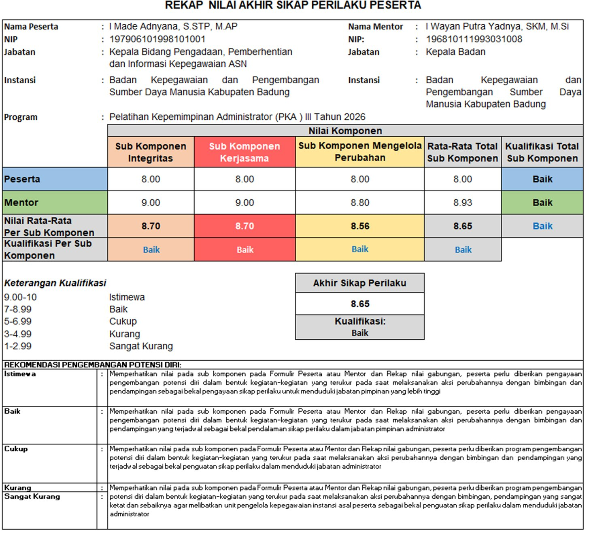
Secara keseluruhan, hasil rekapitulasi nilai akhir sikap menunjukkan bahwa peserta telah memiliki modal kepemimpinan yang memadai untuk mengimplementasikan Aksi Perubahan. Namun demikian, sesuai rekomendasi pada hasil penilaian, pengembangan potensi diri tetap perlu dilakukan melalui coaching, mentoring, pembelajaran mandiri, serta keterlibatan aktif dalam implementasi aksi perubahan agar kompetensi kepemimpinan, khususnya dalam aspek mengelola perubahan, semakin meningkat. Dengan penguatan kompetensi tersebut, Project Leader diharapkan mampu menjadi agen perubahan (change leader) yang efektif dalam mewujudkan transformasi tata kelola manajemen ASN melalui pengembangan SIMFONI ASN di BKPSDM Kabupaten Badung.
Untuk menjawab gap kompetensi yang telah teridentifikasi, peserta menyusun rencana pengembangan potensi diri dengan fokus utama pada peningkatan kemampuan pengambilan keputusan dalam situasi dilematis. Penguasaan kompetensi ini dipandang strategis karena akan memperkuat kapasitas kepemimpinan peserta dalam menentukan alternatif kebijakan yang tepat, mengelola berbagai kepentingan stakeholders, serta memastikan implementasi Aksi Perubahan berjalan secara efektif, akuntabel, dan sesuai dengan ketentuan peraturan perundang-undangan.
| No. | Komponen | Intervensi | Strategi Pengembangan Diri | Tahapan Kegiatan | Rencana Waktu |
|---|---|---|---|---|---|
| 1. | Integritas | Penguatan komitmen terhadap nilai-nilai ASN BerAKHLAK | Coaching dengan mentor, refleksi diri, dan evaluasi berkala Coaching dengan mentor, refleksi diri, dan evaluasi berkala | Coaching, penerapan nilai integritas dalam pelaksanaan aksi perubahan, evaluasi | A g u s t u s – Oktober 2026 |
| 2. | Kerja sama | Peningkatan kemampuan kolaborasi dengan tim dan stakeholder | Rapat koordinasi, FGD, komunikasi intensif, dan kerja tim | Koordinasi rutin, FGD, monitoring pelaksanaan bersama Tim Efektif | Agustus 2026– Maret 2027 |
| 3. | M e n g e l o l a perubahan | Penguatan kompetensi k e p e m i m p i n a n perubahan dan inovasi | Coaching, benchmarking, pembelajaran mandiri, serta evaluasi implementasi | Penyusunan rencana perubahan, implementasi, monitoring dan evaluasi | Agustus 2026– 2027 |
Sesuai Tabel 4.1 di atas, menggambarkan bahwa pengembangan potensi diri dilakukan secara bertahap dan berkesinambungan, sejalan dengan tahapan implementasi Aksi Perubahan SIMFONI ASN. Melalui penguatan integritas, kerja sama, dan kemampuan mengelola perubahan, Project Leader diharapkan mampu menjadi agen perubahan yang efektif dalam mendorong transformasi pengelolaan data kepegawaian menuju tata kelola ASN yang lebih profesional, akuntabel, dan berbasis digital.
Hasil studi lapangan di Dinas Koperasi, Usaha Kecil, Menengah dan Tenaga Kerja Kabupaten Bangli menunjukkan beberapa praktik baik (best practice) yang sangat relevan untuk diimplementasikan pada instansi lain. Praktik tersebut tidak hanya meningkatkan kualitas pelayanan publik, tetapi juga memperkuat tata kelola organisasi dan mendukung reformasi birokrasi, yaitu:
Peran Kepala Dinas Koperasi, UKM dan Tenaga Kerja Kabupaten Bangli sudah mencerminkan kehadiran suatu kepimimpinan yang visioner dan mampu mengelola sumber daya terbatas yang ada. Contoh yang ada yaitu Kadis tidak memiliki sopir dan sekpri dalam melaksanakan tugas. Dalam melaksanakan kegiatannya, kadis bersinergi dengan staf yang ada di masing-masing bidang dalam hal ini, Kadis sudah mencerminkan kepemimpinan yang kolaborati
Implementasi peran kepemimpinan pada aspek inovasi pelayanan dapat dilihat melalui pelayanan UMKM terpadu satu pintu dimana pelaku UMKM mendapatkan pendampingan pengurusan legalitas usaha, perizinan, pembiayaan, pemasaran, kemasan, hingga pengembangan usaha dan business matching antara pelaku usaha dengan buyer. SOP yang diberikan juga setiap pelayanan yang diberikan selesai dalam waktu satu (1) hari. Pendampingan berbasis kebutuhan usaha tidak hanya memberikan pelatihan umum, tetapi melakukan identifikasi masalah masing-masing UMKM kemudian memberikan solusi melalui konsultan/pendamping.
Pembangunan jejaring kerja dan kolaborasi dilakukan melalui pelibatan Pihak eksternal dalam mendukung pelaksanaan Tusi Dinas Koperasi, Usaha Kecil, Menengah dan Tenaga Kerja diantaranya Perbankan, OJK, Asosiasi Pengusaha (HIPMI), BUMN, BUMD, Perusahaan Swasta, Kampus/Perguruan Tinggi.
• Perbankan & OJK: fasilitasi Qris (digitalisasi keuangan), bantuan permodalan (KUR).
• Asosiasi Pengusaha (HIPMI): Pemberdayaan UMKM melalui pelatihan bisnis, fasilitas pasar, pengembangan jiwa kewirausahaan muda,.
• BUMN/BUMD/Perusahaan Swasta: Kemitraan dari hulu-hilir melalui pemberdayaan ekonomi berbasis komunitas, penyerapan produk, program pelatihan tenaga kerja dan pembiayaan UMKM, penyelenggaraan jobfair dan informasi karir, edukasi UMKM terkait pentingnya literasi keuangan, standar higienis produk, kemasan modern hingga fasilitasi hak merk (HAKI).
• Kampus/Perguruan Tinggi : Sinergi Tri darma Perguruan Tinggi khususnya pada pengabdian kepada masyarakat dalam hal pendampingan digitalisasi dan manajemen (pemasaran digital e-commerce) dan pengemasan produk bagi 3 pelaku UMKM, inkubasi bisnis &kewirausahaan, kemitraan pameran/expo, KKN/pengabdian masyarakat (penerjunan mahasiswa kelapangan untuk mengidentifikasi dan memecahkan masalah riil di sector kopprasi dan ketenagakerjaan).
Saat ini pelayanan pada Dinas Koperasi, UKM, dan Tenaga Kerja masih memanfaatkan teknologi yang disiapkan oleh pusat seperti ODS Mandiri, ODS Kritik, SIMKOPDES, X-Star BPH Migas, SIKP. SIAP KERJA KEMNAKER, e-TKA Daerah,SISKOP2MI Bentuk Kerjasama:
Integritas merupakan fondasi utama yang menopang keberhasilan implementasi Aksi Perubahan SIMFONI ASN (Sistem Informasi Manajemen Formasi dan Organisasi ASN).
Integritas tidak hanya dimaknai sebagai kepatuhan terhadap ketentuan yang berlaku, tetapi diwujudkan melalui sikap jujur, objektif, transparan, konsisten, dan bertanggung jawab dalam setiap proses pengambilan keputusan. Nilai-nilai tersebut menjadi modal utama dalam membangun kepercayaan mentor, stakeholder, dan Tim Efektif sehingga seluruh tahapan implementasi dapat berjalan sesuai tujuan yang telah direncanakan.
Menghadapi pokok permasalahan organisasi, diterapkan nilai integritas dengan menyampaikan kondisi organisasi secara terbuka kepada mentor dan seluruh stakeholder.
Seluruh permasalahan diidentifikasi berdasarkan kondisi faktual tanpa mengurangi maupun melebihkan fakta yang ada. Pendekatan ini dilakukan agar rumusan masalah yang menjadi dasar aksi perubahan benar benar mencerminkan kebutuhan organisasi serta memperoleh dukungan dari seluruh pihak yang terlibat.
Selain keterbukaan, integritas juga diwujudkan melalui sikap objektif dalam menerima berbagai masukan. Setiap saran yang disampaikan oleh mentor, stakeholder, maupun Tim Efektif didiskusikan secara terbuka dan dipertimbangkan berdasarkan manfaatnya terhadap pencapaian tujuan aksi perubahan, sehingga keputusan yang dihasilkan merupakan hasil kesepahaman bersama, bukan keputusan sepihak.
Nilai akuntabilitas turut diterapkan melalui pendokumentasian seluruh proses konsultasi, koordinasi, dan pembahasan sebagai dasar penyusunan tahapan implementasi berikutnya. Dengan demikian, setiap keputusan yang diambil memiliki dasar yang jelas, dapat ditelusuri, dan dapat dipertanggungjawabkan.
Hasil yang dicapai pada tahap ini adalah terbentuknya kesamaan persepsi mengenai akar permasalahan pengelolaan data kepegawaian, tujuan aksi perubahan, serta komitmen awal stakeholder untuk mendukung implementasi SIMFONI ASN sebagai upaya meningkatkan kualitas pengelolaan data kepegawaian.
Pada tahap ini muncul berbagai usulan dan kebutuhan dari stakeholder yang mencerminkan tingginya harapan terhadap pengembangan platform. Di sisi lain, kondisi tersebut berpotensi menyebabkan ruang lingkup pengembangan melebar sehingga mengganggu fokus implementasi yang telah direncanakan.
Nilai Integritas semakin diperkuat pada kegiatan rekonsiliasi data kepegawaian antara di Perangkat daerah dan BKPSDM. Pada tahap rekonsiliasi data dan prototype SIMFONI ASN, integritas diwujudkan melalui pengendalian data ASN, dokumentasi seluruh pekerjaan, serta pelaporan perkembangan kegiatan secara berkala kepada mentor dan pimpinan.
Konsistensi pelaksanaan aksi perubahan dijaga dengan menerapkan prinsip objektivitas dalam setiap pengambilan keputusan. Seluruh usulan dianalisis berdasarkan urgensi, manfaat terhadap penyelesaian permasalahan organisasi, kesesuaian dengan ruang lingkup aksi perubahan, serta kontribusinya terhadap pencapaian tujuan jangka pendek. Usulan yang belum menjadi prioritas tidak langsung diakomodasi, tetapi dibahas bersama Tim Efektif untuk dipertimbangkan pada tahap pengembangan berikutnya.
Tahap ini menghasilkan tersusunnya perangkat tata kelola implementasi berupa SOP, petunjuk teknis dan rancangan pengembangan SIPETIR yang menjadi landasan pelaksanaan tahapan implementasi berikutnya.
Pada tahap ini, nilai integritas diwujudkan melalui kejujuran, ketelitian, dan tanggung jawab dalam proses penginputan data. Data yang belum lengkap atau belum sesuai tidak langsung dimasukkan ke dalam dashboard, tetapi terlebih dahulu dilakukan klarifikasi dan penyempurnaan bersama programmer dan Tim Efektif. Langkah tersebut dilakukan agar informasi yang tersaji benar-benar valid dan tidak menimbulkan kesalahan dalam proses monitoring maupun pengambilan keputusan.
Penerapan integritas berlanjut pada tahap implementasi ketika dilakukan penyusunan repository bukti dukung, dan uji coba SIMFONI ASN. Tantangan yang dihadapi adalah menjaga keseimbangan antara percepatan implementasi dengan kualitas data yang disajikan. Keinginan untuk segera mengoperasikan SIMFONI ASN harus dihadapkan pada kenyataan bahwa masih terdapat data dan bukti dukung yang memerlukan proses verifikasi.
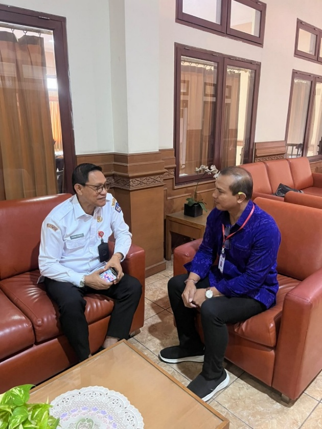
Pelaksanaan Aksi Perubahan SIMFONI ASN (Sistem Informasi Manajemen Formasi dan Organisasi ASN) diawali dengan membangun kesamaan persepsi dan komitmen tim melalui koordinasi, pembagian peran, serta komunikasi intensif dengan stakeholder terkait. Pengelolaan budaya kerja diarahkan untuk mendorong perubahan pola kerja dari yang sebelumnya manual, parsial, dan berbasis dokumen menjadi kolaboratif, terintegrasi, berbasis data, dan berorientasi pada hasil.
Selanjutnya dilakukan identifikasi dan inventarisasi kebutuhan data formasi, bezetting, dan kebutuhan ASN berbasis peta jabatan, dilanjutkan dengan koordinasi bersama pengelola kepegawaian dan perangkat daerah untuk memastikan kesesuaian serta validitas data. Dalam proses tersebut, tim didorong untuk menerapkan budaya kerja yang menekankan ketelitian, tanggung jawab, kolaborasi, keterbukaan informasi, dan perbaikan berkelanjutan.
Setelah terbentuk kesamaan persepsi, pengelolaan budaya kerja dilanjutkan melalui penyusunan SOP dan rencana kerja. Tahap ini menjadi media untuk menyelaraskan perubahan proses kerja dengan pemanfaatan teknologi informasi yang akan dikembangkan. Tantangan yang dihadapi adalah memastikan bahwa mekanisme kerja baru dapat diterima oleh seluruh anggota Tim Efektif tanpa mengganggu pelaksanaan tugas rutin.
Dari sisi pemanfaatan teknologi informasi, dilakukan pengembangan dan penyempurnaan modul SIMFONI ASN pada SIPETIR BKPSDM Kabupaten Badung sebagai sarana integrasi dan pengolahan data. Teknologi dimanfaatkan untuk mengurangi proses pengolahan secara manual, mempercepat penyajian informasi, meningkatkan akurasi data, serta mendukung analisis dan pengambilan keputusan terkait perencanaan kebutuhan ASN.
Tahapan implementasi kemudian dilanjutkan melalui uji coba, validasi, evaluasi, dan penyempurnaan sistem berdasarkan masukan pengguna. Hasil implementasi menunjukkan tersedianya modul Formasi, Bezetting, dan Analisis Kebutuhan ASN berbasis Peta Jabatan yang menjadi instrumen pendukung pengelolaan data dan perencanaan kebutuhan ASN secara lebih terintegrasi. Selain menghasilkan produk digital, implementasi SIMFONI ASN juga mendorong terbentuknya budaya kerja digital, kolaboratif, berbasis data, dan berorientasi pada peningkatan kualitas layanan kepegawaian.
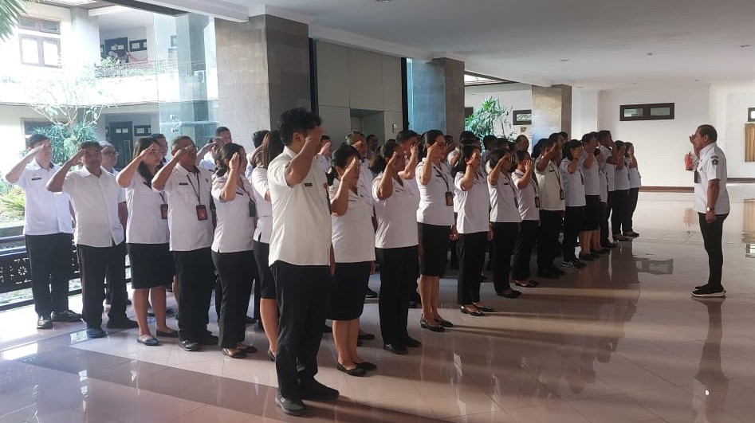
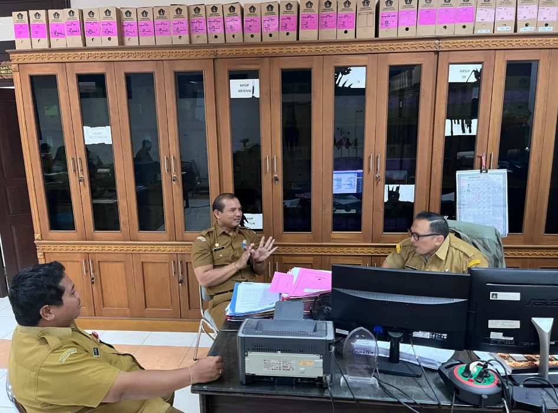
Strategi pertama yang dilakukan adalah membangun kesamaan komitmen mengenai tujuan aksi perubahan. Setelah Tim Efektif terbentuk, setiap anggota diberikan pemahaman mengenai sasaran yang ingin dicapai, ruang lingkup pekerjaan, serta kontribusi yang diharapkan sesuai tugas dan kompetensinya. Pendekatan tersebut dilakukan untuk memastikan bahwa setiap anggota memahami perannya sebagai bagian dari satu tim yang memiliki tujuan bersama, bukan sekadar melaksanakan tugas yang bersifat administratif.
Untuk mendukung hal tersebut, penulis menerapkan pola komunikasi yang terbuka sehingga setiap anggota memiliki kesempatan menyampaikan pendapat, kendala, maupun usulan selama proses implementasi. Melalui komunikasi yang intensif, berbagai permasalahan dapat segera diidentifikasi dan diselesaikan secara bersama tanpa menunggu sampai menjadi hambatan yang mengganggu pelaksanaan aksi perubahan.
Implementasi aksi perubahan memerlukan dukungan dari berbagai pemangku kepentingan karena data dan informasi kepegawaian berasal dari berbagai perangkat daerah. Tantangan yang dihadapi bukan hanya memperoleh data yang diperlukan, tetapi juga membangun kesediaan setiap pihak untuk berpartisipasi aktif dalam mendukung implementasi Pengembangan SIMFONI ASN.
Menghadapi kondisi tersebut, dikedepankan pendekatan kolaboratif melalui koordinasi, konsultasi, dan diskusi secara berkelanjutan dengan mentor, stakeholder, Tim Efektif, serta perangkat daerah yang terlibat. Setiap komunikasi diarahkan untuk membangun pemahaman bahwa pengembangan SIMFONI ASN merupakan upaya bersama dalam meningkatkan kualitas pengelolaan data kepegawaian ASN, sehingga keberhasilannya menjadi tanggung jawab seluruh pihak yang terlibat.
Pendekatan tersebut mampu membangun hubungan kerja yang lebih sinergis. Berbagai kebutuhan data, masukan terhadap pengembangan sistem, maupun penyempurnaan dapat diperoleh melalui komunikasi yang berlangsung secara terbuka. Kondisi tersebut mempercepat proses penyelesaian berbagai kendala yang muncul selama implementasi sekaligus memperkuat dukungan terhadap aksi perubahan.
Pada tahap implementasi, fokus pengelolaan tim diarahkan untuk menjaga konsistensi pelaksanaan pekerjaan sesuai target yang telah ditetapkan. Penulis melakukan pemantauan terhadap perkembangan setiap kegiatan melalui koordinasi rutin sehingga hambatan yang dihadapi anggota tim dapat segera diidentifikasi dan ditindaklanjuti. Pendekatan ini memberikan ruang bagi setiap anggota untuk menyampaikan perkembangan pekerjaan sekaligus memperoleh solusi terhadap kendala yang dihadapi.
Pada Tahap ini, fokus utama diarahkan pada membangun kesadaran bersama mengenai pentingnya perubahan pola kerja dalam pengelolaan data kepegawaian ASN. Tantangan yang dihadapi adalah kebiasaan pengolahan data secara manual melalui aplikasi spreadsheet, sehingga memerlukan waktu yang relatif lama, berpotensi menimbulkan inkonsistensi data, serta menyulitkan pimpinan dalam menentukan kebijakan pengadaan, mutasi, promosi, redistribusi pegawai maupun pengembangan kompetensi ASN.
Untuk mengelola perubahan tersebut, tidak langsung diperkenalkan teknologi sebagai solusi utama, tetapi terlebih dahulu membangun pemahaman mengenai manfaat perubahan yang akan dilakukan.
Pengelolaan Tim Efektif selama implementasi aksi perubahan menunjukkan bahwa keberhasilan perubahan organisasi tidak hanya bergantung pada kemampuan seorang pemimpin, tetapi juga pada kemampuan membangun kerja sama yang produktif di antara anggota tim dan para pemangku kepentingan. Melalui komunikasi yang terbuka, pembagian peran yang jelas, serta kolaborasi yang berkelanjutan, Tim Efektif mampu berperan aktif dalam setiap tahapan implementasi dan memberikan kontribusi terhadap tercapainya tujuan aksi perubahan. Pendekatan tersebut tidak hanya mendukung penyelesaian target jangka pendek, tetapi juga memperkuat budaya kerja kolaboratif yang menjadi modal penting bagi pengembangan SIMFONI ASN pada tahap berikutnya.
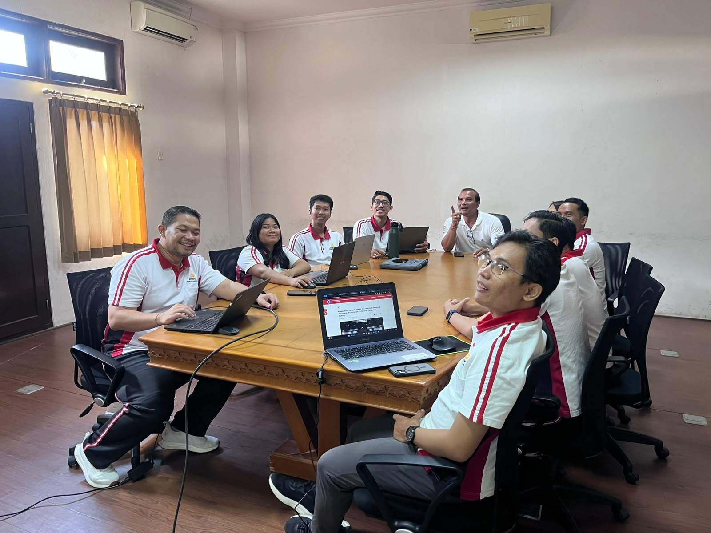
Implementasi Aksi Perubahan SIMFONI ASN (Sistem Informasi Manajemen Formasi dan Organisasi ASN) telah dilaksanakan sesuai dengan milestone yang telah ditetapkan. Tahapan-tahapan yang dilakukan merupakan rangkaian yang saling berhubungan, sehingga memudahkan dalam mewujudkan aksi perubahan. Seluruh kegiatan dilaksanakan secara bertahap mulai dari tahap persiapan, pelaksanaan jangka pendek, pengembangan jangka menengah, hingga rencana keberlanjutan jangka panjang. Adapun tahapan-tahapan dan bukti pelaksanaan adalah sebagai berikut:
Tahapan Kegiatan:
Konsultasi dengan mentor merupakan salah satu tahapan penting dalam implementasi Aksi Perubahan SIMFONI ASN (Sistem Informasi Manajemen Formasi dan Organisasi ASN). Kegiatan ini dilaksanakan sebagai bentuk pembinaan dan penguatan kepemimpinan guna memastikan bahwa setiap tahapan aksi perubahan berjalan sesuai dengan tujuan organisasi, kebutuhan unit kerja, serta memenuhi kaidah pelaksanaan Pelatihan Kepemimpinan Administrator (PKA).
Melalui konsultasi yang dilakukan secara berkala, Project Leader memperoleh arahan, masukan, dan pertimbangan strategis dari mentor terkait penyempurnaan rancangan aksi perubahan, strategi implementasi, pengelolaan sumber daya, mitigasi risiko, serta langkah-langkah yang perlu dilakukan untuk mempercepat pencapaian target kinerja. Proses konsultasi juga menjadi media evaluasi terhadap perkembangan pelaksanaan aksi perubahan sehingga setiap kendala yang muncul dapat diidentifikasi sejak dini dan ditindaklanjuti melalui solusi yang tepat.
Selain memberikan arahan teknis, mentor berperan dalam memastikan bahwa implementasi SIMFONI ASN tetap selaras dengan visi dan misi Badan Kepegawaian dan Pengembangan Sumber Daya Manusia Kabupaten Badung, mendukung peningkatan kualitas pelayanan publik, serta memberikan manfaat nyata bagi pengelolaan data kepegawaian. Berbagai saran dan rekomendasi yang diberikan menjadi dasar dalam penyempurnaan tahapan implementasi agar inovasi yang dikembangkan dapat diterapkan secara efektif, efisien, dan berkelanjutan.
Pelaksanaan konsultasi ini juga mencerminkan penerapan nilai-nilai kepemimpinan yang adaptif, kolaboratif, dan akuntabel. Project Leader menunjukkan keterbukaan terhadap masukan, kemampuan menerima umpan balik secara konstruktif, serta komitmen untuk terus melakukan perbaikan berkelanjutan dalam setiap tahapan pelaksanaan Aksi Perubahan. Dengan adanya pendampingan dari mentor, implementasi SIMFONI ASN memiliki arah yang lebih jelas, memperoleh legitimasi organisasi, serta didukung oleh pengambilan keputusan yang lebih tepat dan terukur.
Dengan demikian, kegiatan konsultasi dengan mentor tidak hanya menjadi bagian dari pemenuhan tahapan implementasi Aksi Perubahan, tetapi juga menjadi faktor penting dalam menjaga kualitas pelaksanaan, memperkuat komitmen organisasi, dan meningkatkan peluang keberhasilan SIMFONI ASN sebagai inovasi digital yang mendukung peningkatan kualitas pengelolaan data kepegawaian di Kabupaten Badung.
Setelah mengikuti seminar aksi perubahan pada tanggal 19 Agustus 2026, mulai keesokan harinya Penulis melakukan penyempurnaan rancangan aksi perubahan “SIMFONI ASN” (Sistem Informasi Manajemen Formasi dan Organisasi ASN) sesuai masukan dari penguji, Mentor, dan coach. Selanjutnya pada hari Rabu tanggal 26 Agustus 2026 penulis menghadap Mentor untuk kosultasi pelaksanaan aksi perubahan “SIMFONI ASN” (Sistem Informasi Manajemen Formasi dan Organisasi ASN). Dalam pertemuan tersebut, Beliau memberikan apresiasi dan sangat menyambut baik hasil seminar yang telah dilakukan dan berharap aksi perubahan “SIMFONI ASN” (Sistem Informasi Manajemen Formasi dan Organisasi ASN) dapat segera diimplementasikan pada Badan Kepegawaian dan Pengembangan Sumber Daya Manusia Kabupaten Badung, sehingga dapat mengatasi permasalahan formasi, besetting dan kebutuhan pegawai.
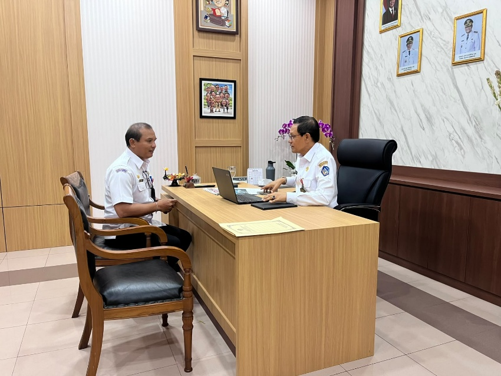
Sebagai langkah awal implementasi Aksi Perubahan, dilaksanakan rapat persiapan SIMFONI ASN (Sistem Informasi Manajemen Formasi dan Organisasi ASN) yang bertujuan untuk menyamakan persepsi, membangun komitmen, serta menyusun strategi pelaksanaan kegiatan secara terarah dan sistematis. Rapat persiapan merupakan tahapan yang sangat penting karena menjadi fondasi dalam memastikan seluruh rangkaian implementasi aksi perubahan dapat berjalan sesuai dengan rencana, target, dan waktu yang telah ditetapkan.
Melalui rapat ini, Project Leader bersama pimpinan dan tim membahas berbagai aspek penting, antara lain pemaparan latar belakang aksi perubahan, tujuan yang ingin dicapai, ruang lingkup kegiatan, pembagian tugas dan tanggung jawab, penyusunan jadwal pelaksanaan, identifikasi kebutuhan sumber daya, serta potensi risiko yang mungkin dihadapi selama implementasi. Pembahasan tersebut menghasilkan kesepakatan bersama mengenai langkah-langkah strategis yang akan ditempuh untuk mendukung keberhasilan implementasi SIMFONI ASN.
Selain sebagai media koordinasi, rapat persiapan juga menjadi sarana membangun sinergi dan kolaborasi antar pegawai serta meningkatkan partisipasi seluruh anggota tim dalam mendukung inovasi yang dikembangkan. Setiap peserta diberikan kesempatan untuk menyampaikan saran, masukan, maupun alternatif solusi sehingga keputusan yang dihasilkan merupakan hasil kesepakatan bersama dan dapat diimplementasikan secara efektif.
Pelaksanaan rapat persiapan ini mencerminkan penerapan kepemimpinan kolaboratif yang mengedepankan komunikasi, koordinasi, dan partisipasi aktif seluruh pemangku kepentingan. Dengan adanya kesamaan persepsi dan komitmen bersama sejak awal, pelaksanaan Aksi Perubahan SIMFONI ASN memiliki landasan yang kuat untuk mencapai tujuan yang telah ditetapkan, yaitu mewujudkan Pengembangan Modul Formasi, Bezetting, dan Analisis Kebutuhan ASN berbasis Peta Jabatan pada SIPETIR BKPSDM Kabupaten Badung sebagai dasar pengambilan keputusan manajemen ASN yang lebih akurat, terintegrasi, adaptif, dan berbasis data.
Sehubungan dengan hal tersebut pada hari Jumat tanggal 28 Agustus 2026 Penulis melaksanakan rapat persiapan imlementasi Rancangan Aksi Perubahan bertempat di Ruang Kepala Bidang Pengadaan, Pemberhentian dan Informasi Kepegawaiam ASN pada BKPSDM Kabupaten Badung Bersama JF Sumber Daya Manusia (SDM) Aparatur serta beberapa staf pelaksana baik dari PNS maupun PPPK. Dalam pertemuan awal tersebut dibahas mengenai kegiatan yang akan dilaksanakan dalam mendukung dan melaksanakan Aksi Perubahan SIMFONI ASN. Dalam rapat kemudian diputuskan bahwa disepakati untuk membentuk tim efektif dengan keanggotaan dan segera dituangkan ke dalam Keputusan Kepala BKPSDM Kabupaten Badung serta perlunya koordinasi lintas sektor dengan stakeholder di luar BKPSDM seperti Dinas Kominfo berkaitan dengan pengembangan sistem dan server, dengan vendor atau tenaga ahli berkaitan dengan pengembangan SIMFONI ASN pada SIPETIR, dengan Bagian Hukum berkaitan dengan Keputusan tentang Tim Efektif serta dengan Bagian Organisasi terkait dengan Peta Jabatan dan SOP. Disamping itu disepakati juga perlunya pengenalan Aksi Perubahan SIMFONI ASN ini dalam kegiatan rekonsiliasi data kepegawaian yang akan dihadiri oleh pejabat pengelola kepegawaian dari seluruh Perangkat Daerah di Kabupaten Badung.
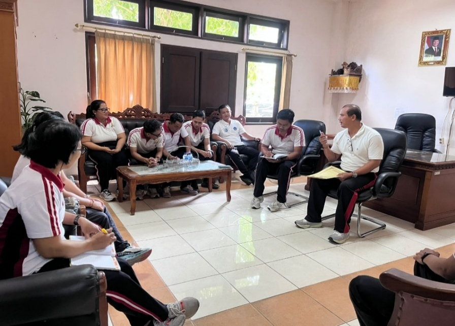
Sesuai hasil Keputusan pada saat rapat persiapan selanjutnya mulai hari Senin tanggal 31 Agustus 2026 dilaksanakan kegiatan Rekonsiliasi Data Kepegawaian Tahun 2026 yang dihadiri oleh Operator SIMPEG dan Pengelola Kepegawaian dari masing-masing Perangkat Daerah sampai dengan Kecamatan, Keluarahan, UPTD, Korwil, Satker serta Sekolah SD dan SMP se-Kabupaten Badung. Dalam kegiatan rekonsiliasi data kepegawaian tersebut juga sekaligus pengenalan Aksi Perubahan SIMFONI ASN karena dalam pelaksanaan Aksi Perubahan tersebut memerlukan penginputan data ASN dari masing-masing Perangkat Daerah sampai kepada unit organisasi terkecil sesuai dengan nomenklatur Perangkat Daerah.
Pengenalan Aksi Perubahan SIMFONI ASN bertujuan untuk memberikan pemahaman dan menyamakan persepsi seluruh pengelola kepegawaian Perangkat Daerah mengenai pemanfaatan SIMFONI ASN sebagai modul pengelolaan formasi, bezetting, dan kebutuhan pegawai berbasis peta jabatan, sekaligus membangun komitmen dalam penyediaan data yang valid, mutakhir, terintegrasi, dan dapat dimanfaatkan sebagai dasar perencanaan serta pengambilan keputusan kepegawaian.
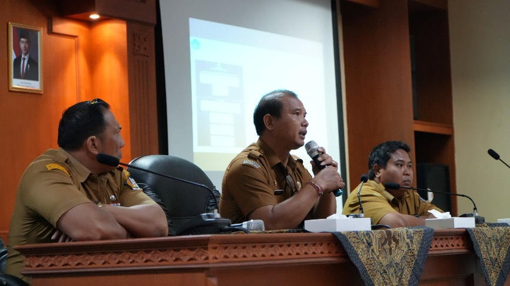
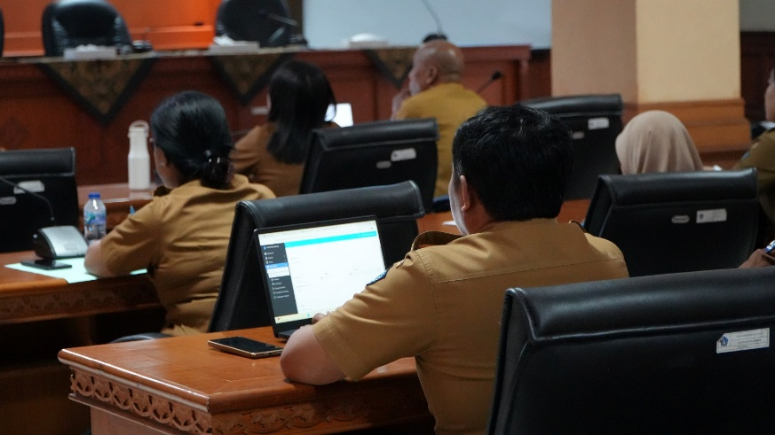
Keberhasilan implementasi suatu aksi perubahan sangat ditentukan oleh kemampuan membangun tim yang solid serta menyusun rencana kerja yang terarah. Oleh karena itu, setelah memperoleh arahan dari mentor dan mendapatkan dukungan pimpinan, tahapan berikutnya dalam implementasi “SIMFONI ASN” (Sistem Informasi Manajemen Formasi dan Organisasi ASN) adalah membentuk tim efektif yang memiliki kompetensi, komitmen, dan tanggung jawab sesuai dengan peran masing-masing. Pembentukan tim ini menjadi langkah strategis untuk memastikan seluruh tahapan pelaksanaan aksi perubahan dapat berjalan secara terkoordinasi, terintegrasi, dan tepat sasaran.
Tim efektif dibentuk dengan mempertimbangkan kompetensi, pengalaman, serta fungsi masing-masing anggota yang berasal dari unit kerja terkait. Melalui pembagian tugas yang jelas, setiap anggota memahami peran, tanggung jawab, dan target kinerja yang harus dicapai sehingga mampu bekerja secara sinergis dalam mendukung pengembangan dan implementasi SIMFONI ASN. Pendekatan kolaboratif ini juga menjadi sarana untuk memperkuat komunikasi, meningkatkan rasa memiliki (sense of ownership), serta menumbuhkan komitmen bersama terhadap keberhasilan aksi perubahan.
Dengan terbentuknya Tim Efektif, implementasi SIMFONI ASN diharapkan tidak hanya menjadi kegiatan pengembangan aplikasi, tetapi menjadi proses perubahan tata kelola pengelolaan data formasi, bezetting dan kebutuhan ASN yang lebih terintegrasi, efektif, efisien dan dapat dimanfaatkan sebagai instrumen pendukung pengambilan keputusan
Berdasarkan uraian tersebut di atas, pada hari Jumat tanggal 28 Agustus 2026 pada saat rapat persiapan sekaligus pembentukan tim efektif. Rapat dipimpin oleh penulis selaku project leader dengan agenda persiapan sekaligus penyusunan SK Tim Efektif dan draf rencana kerja aksi perubahan. Setelah melakukan diskusi yang cukup panjang, akhirnya draf SK dan rencana kerja dapat diselesaikan dan disepakati. Khusus rencana kerja akan dibahas lebih lanjut dalam pelaksanaan FGD.
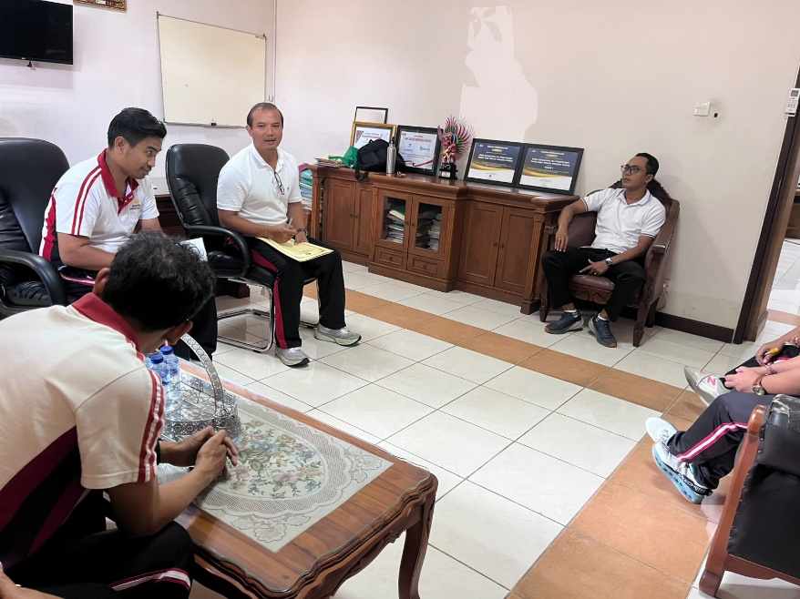
Dalam rangka memastikan implementasi aksi perubahan SIMFONI ASN (Sistem Informasi Manajemen Formasi dan Organisasi ASN) dapat berjalan secara efektif dan berkelanjutan, diperlukan koordinasi dan kolaborasi lintas sektor dengan perangkat daerah yang memiliki kewenangan dan keterkaitan langsung terhadap substansi maupun dukungan teknis sistem. Koordinasi dilakukan untuk membangun kesamaan persepsi, memperoleh dukungan, memastikan kesesuaian regulasi, serta menjamin keterpaduan data dan sistem.
Koordinasi pertama pada hari Rabu tanggal 2 September 2026 dilakukan dengan Bagian Hukum Sekretariat Daerah Kabupaten Badung, khususnya berkaitan dengan penyusunan dan penetapan SK Pembentukan Tim Efektif. Koordinasi ini bertujuan untuk memastikan bahwa dasar hukum, substansi, susunan keanggotaan, tugas dan tanggung jawab Tim Efektif dalam mendukung implementasi SIMFONI ASN telah sesuai dengan ketentuan peraturan perundang-undangan dan tata naskah dinas yang berlaku. Melalui koordinasi tersebut diharapkan SK Tim Efektif memiliki landasan hukum yang jelas serta memberikan legitimasi kepada seluruh anggota tim dalam melaksanakan tugas dan tanggung jawabnya.
Koordinasi berikutnya juga dilakukan pada hari Rabu tanggal 2 September 2026 dengan Bagian Organisasi Sekretariat Daerah Kabupaten Badung, terutama terkait dengan data dan substansi peta jabatan. Hal ini penting karena salah satu komponen utama SIMFONI ASN adalah tersedianya data peta jabatan yang dapat menjadi dasar dalam melakukan analisis formasi, bezetting, dan kebutuhan ASN pada masing-masing perangkat daerah. Koordinasi dengan Bagian Organisasi dilakukan untuk memperoleh kesamaan persepsi mengenai struktur organisasi, peta jabatan, nomenklatur jabatan, serta kesesuaian data jabatan yang akan digunakan sebagai bagian dari pengembangan modul SIMFONI ASN. Pada kesempatan tersebut juga dilaksanakan harmonisasi, revisi dan finalisasi SOP.
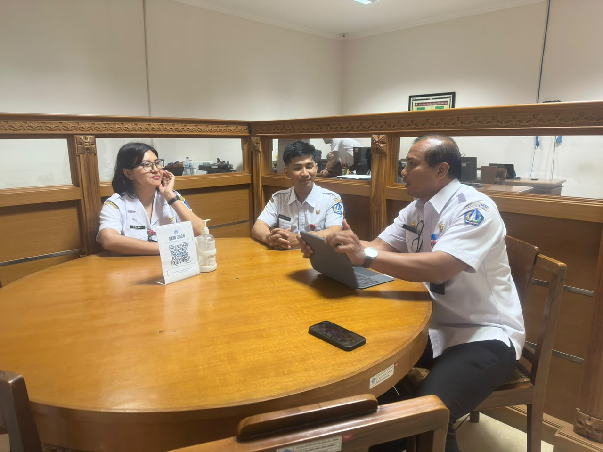
Selanjutnya, pada hari Kamis tanggal 10 September 2026 koordinasi dilakukan dengan Dinas Komunikasi dan Informatika Kabupaten Badung dalam rangka mendukung aspek teknis pengembangan dan implementasi SIMFONI ASN yang akan terintegrasi atau dikembangkan melalui SIPETIR. Koordinasi terutama berkaitan dengan kesiapan server/infrastruktur teknologi informasi, dukungan jaringan, keamanan sistem, pengelolaan aplikasi, serta kebutuhan teknis lainnya. Keterlibatan Dinas Kominfo menjadi penting untuk memastikan sistem dapat dibangun dan diimplementasikan pada infrastruktur yang memadai, aman, dan dapat mendukung keberlanjutan pemanfaatan SIMFONI ASN di lingkungan Pemerintah Kabupaten Badung.
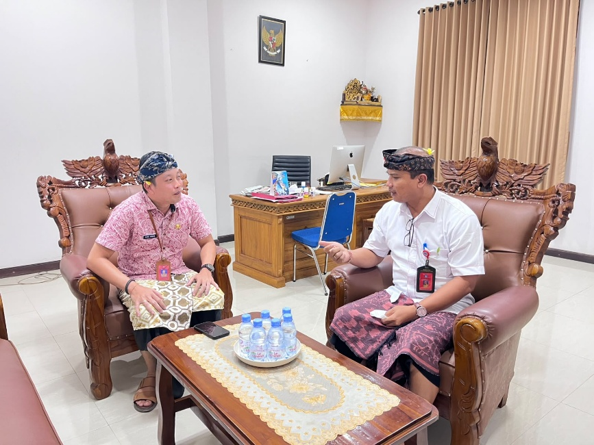
Melalui koordinasi dengan Bagian Hukum, Dinas Komunikasi dan Informatika, serta Bagian Organisasi, implementasi SIMFONI ASN tidak hanya menjadi inovasi pada lingkup Bidang PPIK BKPSDM Kabupaten Badung, tetapi diarahkan menjadi sebuah inovasi yang didukung secara regulatif, teknis, dan substantif. Kolaborasi lintas sektor tersebut diharapkan dapat memperkuat implementasi aksi perubahan, mempercepat pengembangan modul pada SIPETIR, serta menghasilkan pengelolaan data formasi, bezetting, kebutuhan ASN dan peta jabatan yang lebih akurat, terintegrasi, dan dapat dimanfaatkan sebagai dasar pengambilan keputusan kepegawaian di Kabupaten Badung.
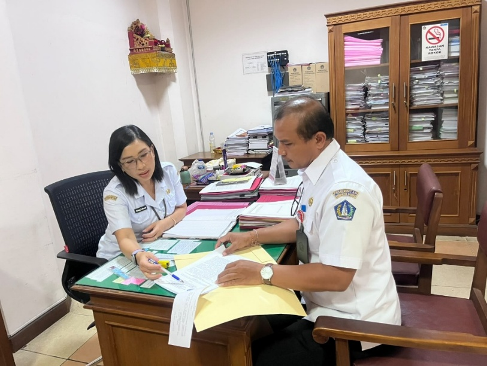
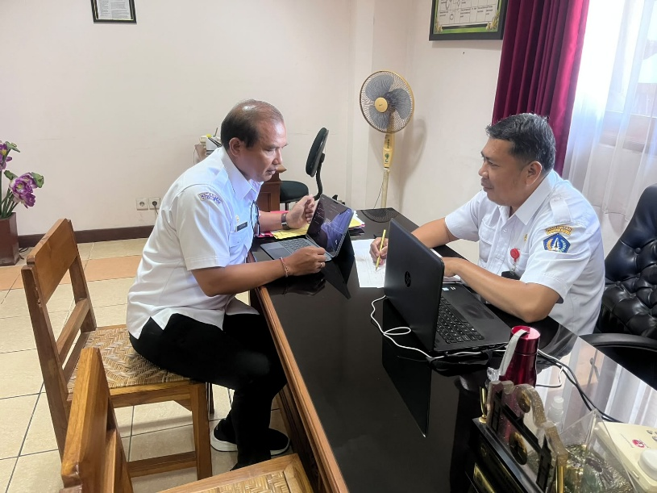
Dalam rangka mendukung pelaksanaan Manajemen ASN di Kabupaten Badung khususnya dalam implementasi Aksi Perubahan SIMFONI ASN agar berjalan secara terarah, terintegrasi, efektif, akuntabel dan berbasis digital, diperlukan Rencana Kerja dan Standar Operasional Prosedur (SOP) yang jelas sebagai pedoman dalam setiap tahapan pelaksanaan. FGD Penyusunan Rencana Kerja dan SOP SIMFONI ASN ini sebagai forum pembahasan dan penyelarasan yang akan menjadi acuan dalam pelaksanaan Implementasi SIMFONI ASN. FGD melibatkan unsur Dinas Komunikasi dan Informatika Kabupaten Badung sebagai pihak yang mendukung aspek teknologi informasi dan pengembangan sistem, Bagian Organisasi Setda Kabupaten Badung sebagai pihak yang berkaitan dengan kelembagaan, analisis jabatan, analisis beban kerja dan peta jabatanProgrammer, Tim Efektif Aksi Perubahan, serta Pejabat Pengelola Kepegawaian dari 5 (lima) Perangkat Daerah di lingkungan Pemerintah Kabupaten Badung sebagai pilot project atau percontohan. Melalui kegiatan ini diharapkan menghasilkan Rencana Kerja dan SOP yang sesuai dengan kebutuhan Manajemen ASN sehingga SIMFONI ASN dapat dikembangkan secara terstruktur dan mendukung peningkatan kualitas data ASN di Kabupaten Badung.
Focus Group Discussion (FGD) Penyusunan Rencana Kerja dan SOP Implementasi SIMFONI ASN dilaksanakan pada hari Selasa, 1 September 2026, mulai pukul 13.00 WITA sampai dengan selesai, bertempat di Ruang Pradnyan BKPSDM Kabupaten Badung. Kegiatan ini dipimpin oleh Kepala Bidang Pengadaan, Pemberhentian dan Informasi Kepegawaian ASN BKPSDM Kabupaten Badung Pembahasan dilakukan dengan mencermati alur proses, tahapan kegiatan, pihak yang terlibat, pembagian tugas dan tanggung jawab, kebutuhan data dan dokumen, serta keluaran yang dihasilkan pada setiap tahapan.
Terhadap rancangan yang dibahas, peserta memberikan masukan dan saran untuk memastikan alur proses, pembagian tugas, dokumen masukan dan keluaran, serta keterkaitan antarproses dapat dilaksanakan secara jelas dan sesuai dengan ketentuan yang berlaku. Hasil pembahasan selanjutnya menjadi bahan penyempurnaan rancangan Rencana Kerja dan SOP sebelum digunakan sebagai pedoman dalam implementasi SIMFONI ASN.
Berdasarkan hasil pelaksanaan FGD, diperoleh hasil sebagai berikut:
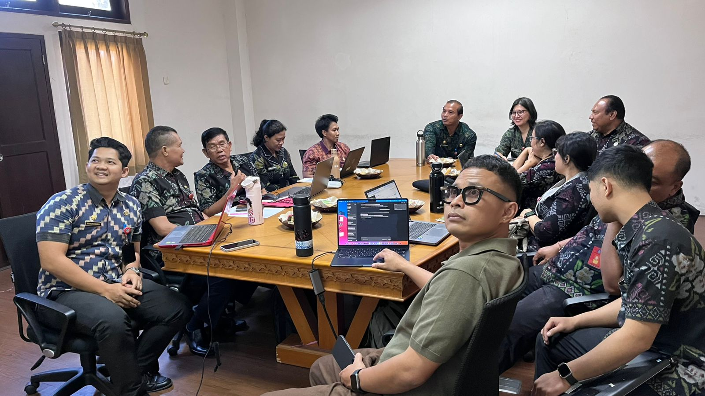
Setelah dilaksanakannya Focus Group Discussion (FGD) bersama Programmer, Tim Efektif, Dinas Komunikasi dan Informatika, Bagian Organisasi, serta Pejabat Pengelola Kepegawaian dari beberapa Perangkat Daerah sebagai pilot project, tahapan selanjutnya dalam jangka pendek Aksi Perubahan SIMFONI ASN adalah perancangan dan koding modul serta coaching oleh Programmer kepada Tim Efektif serta pejabat pengelola kepegawaian di 5 (lima) Perangkat Daerah.
Kegiatan ini dilaksanakan pada hari Selasa tanggal 8 September 2026 bertempat di Ruang Jnana BKPDM Kabupaten Badung sebagai tindak lanjut dari hasil FGD, khususnya terhadap kesepakatan mengenai SOP, kebutuhan data, kebutuhan pengguna, serta rencana kerja implementasi SIMFONI ASN. Hasil FGD menjadi dasar bagi Programmer dalam menerjemahkan kebutuhan proses bisnis ke dalam rancangan sistem yang dapat diimplementasikan secara digital.
Pada tahap perancangan modul, dilakukan penyusunan desain awal Modul Formasi, Bezetting, dan Analisis Kebutuhan ASN berbasis Peta Jabatan. Perancangan mencakup struktur menu, alur input dan pengolahan data, kebutuhan field data, mekanisme validasi, serta bentuk informasi atau output yang akan dihasilkan oleh sistem. Perancangan tersebut diarahkan agar modul yang dikembangkan mampu memberikan informasi yang lebih cepat, akurat, terintegrasi, dan mudah digunakan oleh Pejabat Pengelola Kepegawaian Perangkat Daerah.
Selanjutnya, Programmer melaksanakan koding dan pengembangan modul berdasarkan desain dan kebutuhan yang telah disepakati. Proses koding dilakukan secara bertahap dengan memperhatikan kesesuaian antara rancangan sistem dengan SOP yang telah disusun. Dalam proses ini dilakukan pula pengujian awal terhadap fungsi-fungsi utama modul, termasuk proses input data, penyimpanan, pengolahan, validasi, serta penyajian informasi formasi, bezetting, dan kebutuhan ASN.
Untuk memastikan proses pengembangan berjalan sesuai tujuan Aksi Perubahan, pada kesempatan tersebut juga sekaligus dilaksanakan coaching yang diarahkan untuk memberikan pemahaman terhadap substansi kepegawaian, kebutuhan pengguna, serta memberikan umpan balik terhadap hasil pengembangan modul. Dengan demikian, proses pengembangan tidak hanya berorientasi pada aspek teknis aplikasi, tetapi juga memastikan bahwa sistem yang dibangun benar-benar menjawab kebutuhan pengelolaan data kepegawaian di lingkungan Pemerintah Kabupaten Badung.
Melalui tahapan perancangan, koding, dan coaching ini diharapkan terbentuk prototype/modul awal SIMFONI ASN yang dapat diuji coba pada Perangkat Daerah pilot project. Tahapan tersebut menjadi jembatan antara hasil perencanaan dengan implementasi nyata, sekaligus menjadi dasar untuk pelaksanaan uji coba, evaluasi, penyempurnaan, dan pengembangan SIMFONI ASN pada tahapan jangka menengah dan jangka panjang.
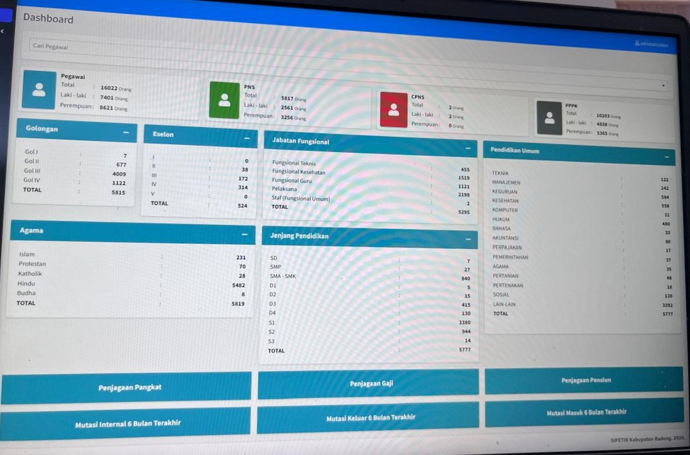
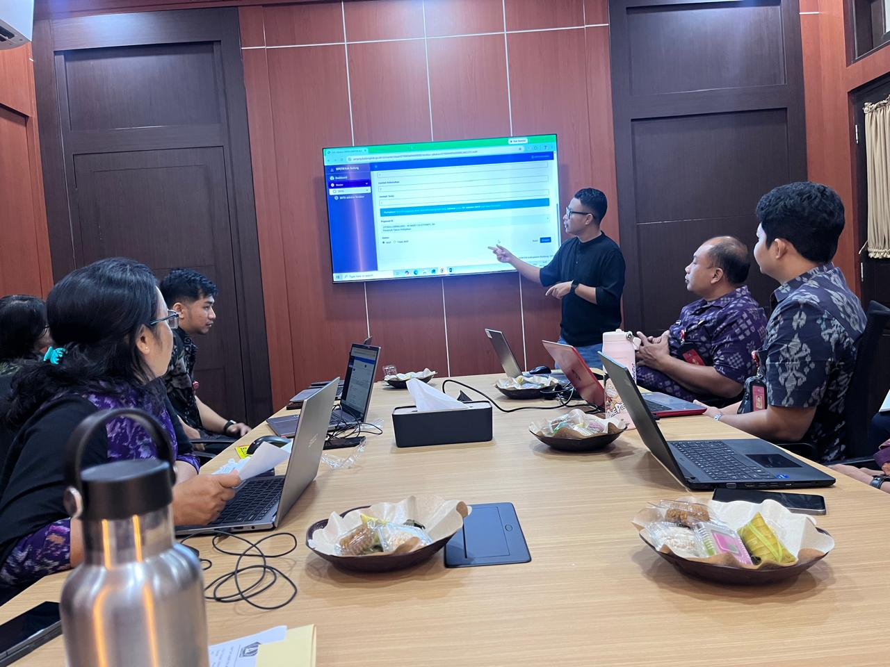
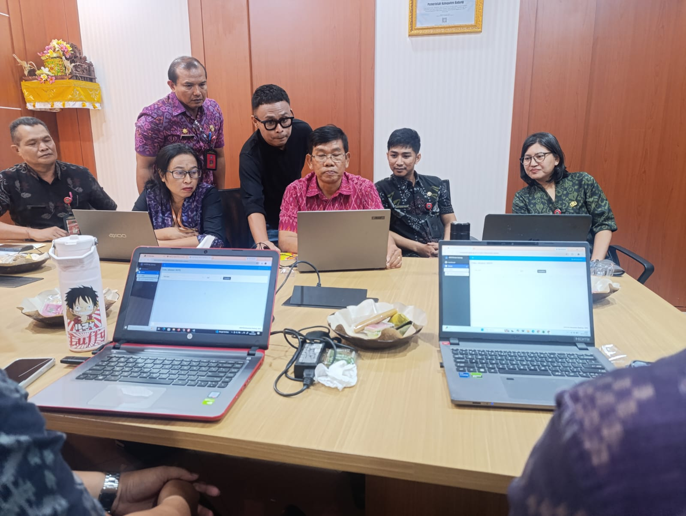
Setelah tahapan perancangan sistem, proses coding/pengembangan aplikasi, serta coaching dan pendampingan teknis dilaksanakan, tahapan selanjutnya dalam jangka pendek adalah uji coba dan pemantapan implementasi SIMFONI ASN (Sistem Informasi Manajemen Formasi dan Organisasi ASN). Uji coba ini merupakan tahapan penting untuk memastikan bahwa rancangan dan modul yang telah dikembangkan dapat berfungsi sesuai kebutuhan serta dapat digunakan oleh pejabat pengelola kepegawaian pada Perangkat Daerah.
Pelaksanaan uji coba dilaksanakan melalui rapat yang diselenggarakan pada hari Rabu, 30 September 2026 bertempat di Ruang Rapat Jnana BKPDM Kabupaten Badung Dimana dilakukan secara terbatas dengan melibatkan Tim Efektif, Programmer, Pejabat Pengelola Kepegawaian pada Perangkat Daerah pilot project, serta unsur terkait lainnya. Uji coba diarahkan pada pemanfaatan modul yang berkaitan dengan data formasi, bezetting, kebutuhan ASN, dan keterkaitannya dengan peta jabatan. Perangkat Daerah yang ditetapkan sebagai pilot project diberikan kesempatan untuk melakukan input, pemutakhiran, serta pengecekan data sesuai kondisi kepegawaian pada masing-masing perangkat daerah.
Dalam pelaksanaannya, dilakukan simulasi alur penggunaan SIMFONI ASN mulai dari login pengguna, input dan pemutakhiran data, pengolahan data, verifikasi, sampai dengan penyajian informasi. Tim Efektif bersama Programmer melakukan pendampingan untuk memastikan setiap tahapan dapat berjalan dengan baik. Apabila ditemukan kendala, baik yang berkaitan dengan sistem, kelengkapan data, maupun pemahaman pengguna, dilakukan pencatatan dan identifikasi sebagai bahan perbaikan.
Hasil uji coba selanjutnya digunakan untuk melakukan evaluasi dan penyempurnaan sistem. Masukan dari pengguna menjadi bahan bagi Tim Programmer dalam melakukan perbaikan terhadap fungsi, tampilan, alur proses, maupun kebutuhan data yang masih belum sesuai. Dengan demikian, uji coba tidak hanya bertujuan untuk mengetahui apakah sistem dapat berjalan, tetapi juga untuk memastikan bahwa SIMFONI ASN benar-benar sesuai dengan kebutuhan proses bisnis pengelolaan formasi, bezetting, kebutuhan ASN, dan peta jabatan di lingkungan Pemerintah Kabupaten Badung.
Melalui tahapan uji coba ini diharapkan diperoleh versi awal SIMFONI ASN yang dapat digunakan secara operasional pada Perangkat Daerah pilot project, sekaligus memperoleh umpan balik sebagai dasar penyempurnaan sebelum dilakukan implementasi yang lebih luas. Tahapan ini menjadi salah satu indikator bahwa aksi perubahan telah bergerak dari tahap konseptual dan pengembangan menuju penerapan inovasi secara nyata dalam mendukung pengelolaan data kepegawaian yang lebih terintegrasi, akurat, dan informatif.
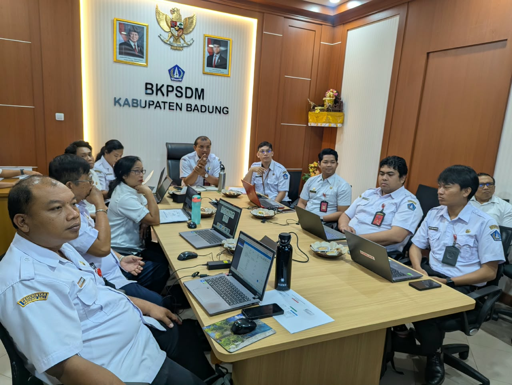
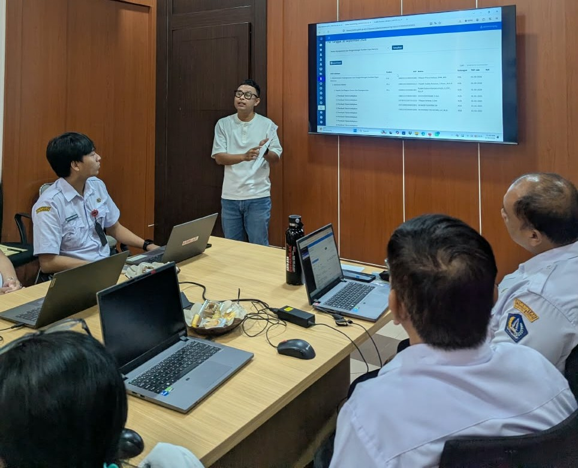
Setelah pelaksanaan uji coba implementasi SIMFONI ASN (Sistem Informasi Manajemen Formasi dan Organisasi ASN) pada beberapa Perangkat Daerah yang ditetapkan sebagai pilot project, dilakukan evaluasi terhadap proses pelaksanaan untuk mengidentifikasi berbagai kendala dan hambatan yang muncul di lapangan. Evaluasi ini merupakan bagian penting dalam memastikan bahwa inovasi yang dikembangkan dapat diterapkan secara efektif dan sesuai dengan kebutuhan pengguna.
Evaluasi kendala dan hambatan ini dilaksanakan pada hari Selasa, 6 Oktober 2026 bertempat di Ruang Rapat Pradnyan BKPSDM Kabupaten Badung yang rencananya dipimpin oleh Kepala BKPSDM.
Berdasarkan hasil diskusi bersama Tim Efektif, Programmer, Dinas Kominfo, Bagian Organisasi, serta Pejabat Pengelola Kepegawaian pada Perangkat Daerah pilot project, secara umum implementasi SIMFONI ASN dapat berjalan dengan baik. Namun demikian, masih ditemukan beberapa kendala yang perlu mendapatkan perhatian dan tindak lanjut.
Beberapa kendala berkaitan dengan aspek teknis aplikasi, seperti penyesuaian beberapa fitur, tampilan, alur input data, serta kebutuhan integrasi dengan sistem informasi kepegawaian yang sudah tersedia. Hasil uji coba menunjukkan adanya beberapa bagian yang masih perlu disempurnakan oleh Programmer agar sistem lebih mudah digunakan, responsif dan sesuai dengan kebutuhan operasional pengguna.
Selain itu, terdapat hambatan dalam hal koordinasi dan komunikasi antar pihak yang terlibat, mengingat implementasi SIMFONI ASN membutuhkan keterlibatan beberapa unsur, mulai dari BKPSDM, Dinas Kominfo, Bagian Organisasi hingga Perangkat Daerah sebagai pengguna. Oleh karena itu, diperlukan koordinasi yang berkelanjutan untuk memastikan setiap permasalahan dapat segera diidentifikasi dan ditindaklanjuti.
Atas berbagai kendala tersebut, dilakukan langkah perbaikan berupa verifikasi dan validasi data, penyempurnaan fitur berdasarkan masukan pengguna, pendampingan kepada Pejabat Pengelola Kepegawaian, penyempurnaan petunjuk teknis, serta penguatan koordinasi dengan Programmer dan stakeholder terkait. Hasil evaluasi selanjutnya menjadi bahan penyempurnaan SIMFONI ASN sebelum dilakukan pengembangan dan implementasi pada cakupan Perangkat Daerah yang lebih luas.
Dengan demikian, evaluasi pasca uji coba tidak hanya dimaksudkan untuk menemukan kekurangan, tetapi juga menjadi siklus pembelajaran dan perbaikan berkelanjutan dalam pelaksanaan aksi perubahan. Hasil evaluasi tersebut menjadi dasar bagi Project Leader dalam memastikan bahwa SIMFONI ASN mampu memberikan manfaat nyata dalam meningkatkan kualitas pengelolaan data formasi, bezetting dan kebutuhan ASN berbasis peta jabatan di Kabupaten Badung.
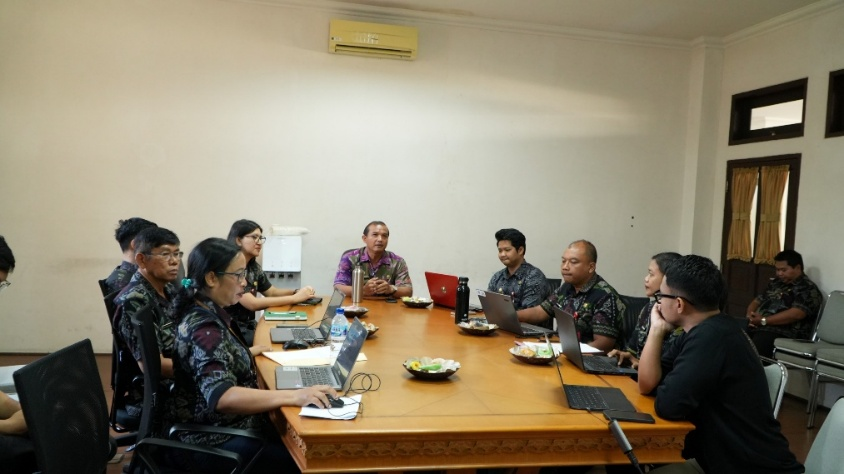
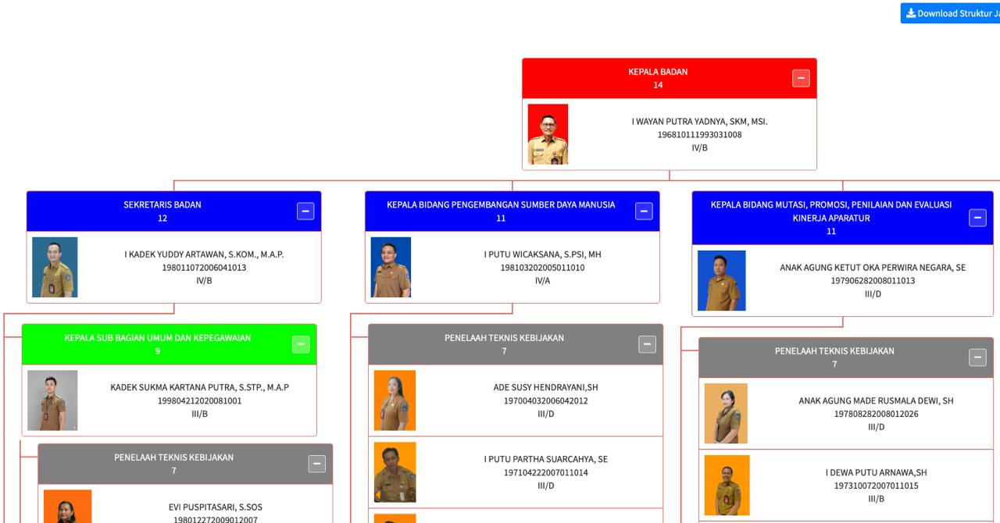
Berkaitan dengan milestone jangka pendek dalam aksi perubahan SIMFONI ASN (Sistem Informasi Manajemen Formasi dan Organisasi ASN) penulis telah melaporkan pelaksanaan kepada mentor pada hari Senin, tanggal 12 Oktober 2026, bertempat di Ruang Kepala Badan Kepegawaian dan Pengembangan Sumber Daya Manusia (BKPSDM) Kabupaten Badung.
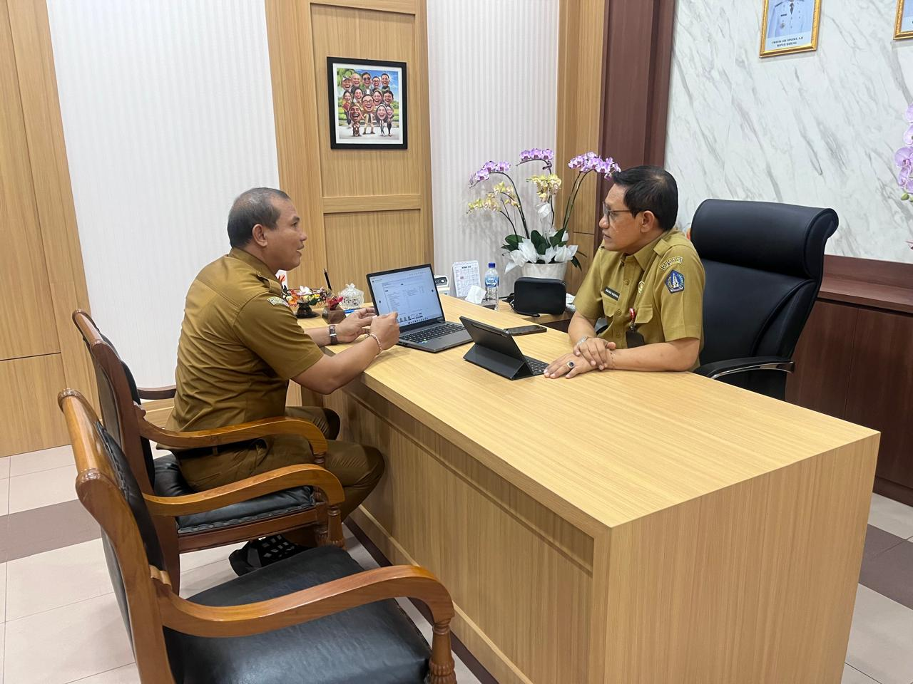
Dalam kesempatan tersebut, penulis menyampaikan laporan mengenai tahapan pelaksanaan aksi perubahan yang telah dilaksanakan, capaian kegiatan sesuai dengan rencana milestone jangka pendek, serta hasil yang telah diperoleh dalam mendukung optimalisasi pengelolaan data formasi, bezetting, dan analisis kebutuhan ASN berbasis peta jabatan di lingkungan Pemerintah Kabupaten Badung.
Pelaporan ini merupakan bentuk pertanggungjawaban penulis atas pelaksanaan aksi perubahan selama tahapan jangka pendek, sekaligus sebagai sarana untuk menyampaikan hasil implementasi, kendala yang dihadapi, serta upaya tindak lanjut yang diperlukan guna menjamin keberlanjutan inovasi SIMFONI ASN. Melalui kegiatan ini, penulis juga memperoleh arahan, masukan, dan dukungan dari mentor sebagai bahan penyempurnaan pelaksanaan aksi perubahan pada tahapan berikutnya.
Dengan terlaksananya pelaporan Laporan Aksi Perubahan kepada mentor, diharapkan hasil pelaksanaan milestone jangka pendek SIMFONI ASN dapat menjadi fondasi bagi pengembangan dan implementasi lebih lanjut, sehingga mampu meningkatkan efektivitas, efisiensi, akurasi, dan keterpaduan pengelolaan data kepegawaian, khususnya dalam perencanaan kebutuhan ASN di Kabupaten Badung.
| No. | Milestone | Output | Realisasi | Evidence |
|---|---|---|---|---|
| 1 | Konsultasi awal dan pelaporan kepada Mentor | Arahan, dukungan, dan persetujuan mentor terhadap pelaksanaan aksi perubahan SIMFONI ASN | Konsultasi dengan Mentor terkait hasil seminar dan rencana implementasi SIMFONI ASN | https://klik.badungkab.go.id/u/konsultasi mentor |
| 2 | Rapat persiapan pelaksanaan | Tersusunnya rencana pelaksanaan dan pembagian tugas | Rapat persiapan implementasi SIMFONI ASN serta penyusunan rencana kerja | https://klik.badungkab.go.id/u/rapat persiapan |
| 3 | Pembentukan tim yang efektif | Terbentuknya Tim Efektif beserta pembagian tugas dan tanggung jawab | Rapat pembentukan Tim Efektif dan penyusunan draft rencana kerja Aksi Perubahan | https://klik.badungkab.go.id/u/Tim efektif |
| No. | Milestone | Output | Realisasi | Evidence |
|---|---|---|---|---|
| 4 | Penyusunan Rencana Kerja | Tersusunnya Rencana kerja sebagai pedoman pelaksanaan aksi perubahan. | Rapat pembentukan Tim Efektif dan penyusunan draft rencana kerja Aksi Perubahan | https://klik.badungkab.go.id/u/rencana kerja |
| 5 | Koordinasi lintas sektor | Dukungan dan kesamaan persepsi lintas sektor terhadap implementasi SIMFONI ASN | Koordinasi dengan Bagian Hukum, Dinas Komunikasi dan Informatika, serta Bagian Organisasi Kabupaten Badung terkait aspek regulasi, teknologi/infrastruktur dan peta jabatan | https://klik.badungkab.go.id/u/lintas sektor |
| No. | Milestone | Output | Realisasi | Evidence |
|---|---|---|---|---|
| 6 | Pelaksanaan FGD dengan Programmer dan Tim Efektif serta Pejabat Pengelola Kepegawaian di beberapa Perangkat Daerah | Tersusunnya rumusan kebutuhan sistem dan proses bisnis SIMFONI ASN | GD dengan Programmer, Tim Efektif dan Pejabat Pengelola Kepegawaian dari 5 Perangkat Daerah pilot project untuk membahas kebutuhan data, SOP dan kebutuhan pengguna. | https://klik.badungkab.go.id/u/FGD |
| 7 | Perancangan dan koding modul serta coaching | Tersedianya prototype/modul awal SIMFONI ASN pada SIPETIR | Perancangan dan pengembangan/koding modul Formasi, Bezetting dan Analisis Kebutuhan ASN serta coaching kepada Tim Efektif dan pengelola kepegawaian | https://klik.badungkab.go.id/u/rancang koding coachin |
| No. | Milestone | Output | Realisasi | Evidence |
|---|---|---|---|---|
| 8 | Coaching lanjutan | Pemahaman operator kepegawaian Perangkat Daerah terhadap SIMFONI ASN | Operator kepegawaian memahami proses penginputan data SIMFONI ASN | https://klik.badungkab.go.id/u/coaching |
| 9 | Uji Coba SIMFONI ASN | Diperolehnya hasil uji coba, data awal dan identifikasi penyempurnaan sistem | Uji coba terbatas bersama Tim Efektif, Programmer dan Pejabat Pengelola Kepegawaian pada Perangkat Daerah pilot project, meliputi input, pemutakhiran, verifikasi dan penyajian data | https://klik.badungkab.go.id/u/Uji coba |
| No. | Milestone | Output | Realisasi | Evidence |
|---|---|---|---|---|
| 10 | Evaluasi Kendala dan Hambatan | Tersusunnya rekomendasi perbaikan dan rencana tindak lanjut | Evaluasi terhadap hasil uji coba, identifikasi kendala data, pengguna dan teknis aplikasi serta penyusunan tindak lanjut penyempurnaan | https://klik.badungkab.go.id/u/evaluasi |
| 11 | Laporan akhir kepada Mentor | Tanggapan terhadap hasil SIMFONI ASN | Laporan kepada Mentor terkait hasil implementasi SIMFONI ASN | https://klik.badungkab.go.id/u/laporan kpd mentor |
Implementasi SIMFONI ASN (Sistem Informasi Manajemen Formasi dan Organisasi ASN) memberikan manfaat dalam meningkatkan efektivitas, efisiensi, dan kualitas pengelolaan data kepegawaian, khususnya data formasi, bezetting, kebutuhan ASN, dan peta jabatan. Melalui pemanfaatan sistem yang lebih terintegrasi, proses pengumpulan, pengolahan, pemantauan, dan penyajian data dapat dilakukan secara lebih cepat, akurat, dan mudah diakses sebagai dasar dalam pengambilan keputusan.
Implementasi SIMFONI ASN (Sistem Informasi Manajemen Formasi dan Organisasi ASN) memberikan manfaat bagi BKPSDM Kabupaten Badung dalam meningkatkan efektivitas, efisiensi, dan akurasi pengelolaan data formasi, bezetting, kebutuhan ASN, serta peta jabatan. Sistem ini membantu mengintegrasikan data yang sebelumnya dikelola secara terpisah sehingga proses pemantauan, analisis, dan penyediaan informasi kepegawaian dapat dilakukan secara lebih cepat, akurat, dan transparan.
Selain itu, SIMFONI ASN mendukung BKPSDM dalam menghasilkan data dan informasi yang lebih valid sebagai dasar pengambilan kebijakan, khususnya dalam perencanaan kebutuhan ASN dan penyusunan formasi. Implementasi ini juga mendorong digitalisasi proses kerja, mengurangi pekerjaan manual dan duplikasi data, serta memperkuat koordinasi antara BKPSDM dengan Perangkat Daerah, sehingga pada akhirnya meningkatkan kinerja organisasi dalam mewujudkan pengelolaan kepegawaian ASN yang lebih terintegrasi, responsif, dan berbasis data.
Implementasi SIMFONI ASN (Sistem Informasi Manajemen Formasi dan Organisasi ASN) memberikan manfaat bagi berbagai pemangku kepentingan dalam mendukung pengelolaan kepegawaian yang lebih terintegrasi, akurat, transparan, dan berbasis data. Bagi Perangkat Daerah, sistem ini membantu pejabat pengelola kepegawaian dalam menyajikan dan memperbarui data kebutuhan pegawai secara lebih cepat dan terstruktur. Bagi Pimpinan Daerah dan Kepala Perangkat Daerah, informasi yang tersedia dapat menjadi bahan dalam menetapkan kebijakan dan perencanaan kebutuhan ASN secara lebih tepat sasaran. Sementara bagi Tim Teknologi Informasi/Kominfo, implementasi SIMFONI ASN mendukung penguatan digitalisasi dan integrasi sistem pemerintahan berbasis elektronik. Dengan demikian, SIMFONI ASN diharapkan mampu meningkatkan efektivitas, efisiensi, akuntabilitas, dan kualitas tata kelola manajemen ASN di Kabupaten Badung.
Implementasi SIMFONI ASN (Sistem Informasi Manajemen Formasi dan Organisasi ASN) memberikan manfaat bagi Aparatur Sipil Negara (ASN) berupa kemudahan dalam memperoleh informasi kepegawaian yang lebih cepat, akurat, dan terintegrasi, khususnya terkait formasi, bezetting, kebutuhan pegawai, dan peta jabatan. Sistem ini mendukung ASN dalam memahami kondisi dan kebutuhan kepegawaian secara lebih transparan, sehingga dapat meningkatkan efektivitas pelaksanaan tugas, kepastian informasi, serta kualitas perencanaan dan pengembangan karier ASN.
Implementasi SIMFONI ASN memberikan manfaat tidak langsung namun signifikan bagi masyarakat melalui peningkatan kualitas tata kelola kepegawaian di Pemerintah Kabupaten Badung. Dengan tersedianya data formasi, bezetting, kebutuhan ASN, dan peta jabatan yang lebih terintegrasi dan akurat, pemerintah dapat merencanakan pemenuhan kebutuhan pegawai secara lebih tepat sesuai kebutuhan pelayanan publik. Hal ini mendukung tersedianya ASN yang kompeten dan proporsional pada perangkat daerah, sehingga pelayanan kepada masyarakat menjadi lebih cepat, efektif, tepat sasaran, dan berkualitas.
SIMFONI ASN memberikan manfaat dalam meningkatkan efektivitas dan integrasi pengelolaan teknologi informasi kepegawaian melalui penyediaan data formasi, bezetting, kebutuhan ASN, dan peta jabatan secara terintegrasi. Sistem ini mendukung tersedianya data yang lebih akurat, mutakhir, mudah diakses, dan dapat digunakan sebagai dasar monitoring serta pengambilan keputusan. Dengan demikian, pemanfaatan teknologi informasi menjadi lebih optimal, mengurangi proses pengolahan data secara manual, serta meningkatkan efisiensi dan kualitas layanan kepegawaian.
SIMFONI ASN mendukung reformasi birokrasi melalui, peningkatan akuntabilitas, transparansi, efektivitas, dan kualitas pelayanan. Integrasi data formasi, bezetting, kebutuhan ASN, dan peta jabatan membantu mewujudkan pengelolaan ASN yang lebih berbasis data (data-driven), sehingga perencanaan kebutuhan pegawai dapat dilakukan secara objektif dan terukur. Implementasi SIMFONI ASN pada akhirnya berkontribusi terhadap penyederhanaan proses kerja, peningkatan tata kelola pemerintahan, serta penguatan Sistem Pemerintahan Berbasis Elektronik (SPBE).
Keberlanjutan aksi perubahan SIMFONI ASN (Sistem Informasi Manajemen Formasi dan Organisasi ASN) diarahkan agar inovasi yang telah dibangun tidak berhenti pada tahap implementasi jangka pendek, tetapi dapat terus dikembangkan dan dimanfaatkan secara berkelanjutan dalam mendukung pengelolaan data formasi, bezetting, kebutuhan ASN, dan peta jabatan di Kabupaten Badung.
Keberlanjutan aksi perubahan juga diperkuat melalui dukungan pimpinan, Tim Efektif, Dinas Kominfo, Bagian Organisasi, dan Perangkat Daerah, sehingga SIMFONI ASN dapat terintegrasi dan menjadi bagian dari proses bisnis pengelolaan kepegawaian di lingkungan Pemerintah Kabupaten Badung. Dengan demikian, SIMFONI ASN diharapkan menjadi instrumen yang mampu meningkatkan efektivitas, akurasi, transparansi, dan kualitas pengambilan keputusan dalam manajemen ASN secara berkelanjutan.
Keberlanjutan implementasi Aksi Perubahan SIMFONI ASN (Sistem Informasi Manajemen Formasi dan Organisasi ASN) didukung melalui komitmen dan dukungan formal Mentor dalam memastikan inovasi dapat terus dilaksanakan dan dikembangkan setelah tahapan Aksi Perubahan selesai. Dukungan tersebut diwujudkan melalui pemberian arahan, persetujuan, fasilitasi koordinasi lintas perangkat daerah, serta penguatan pemanfaatan SIMFONI ASN sebagai bagian dari pengelolaan data formasi, bezetting, dan kebutuhan ASN berbasis peta jabatan di lingkungan Pemerintah Kabupaten Badung.
Mentor juga mendorong agar hasil implementasi SIMFONI ASN dapat diintegrasikan secara berkelanjutan ke dalam proses kerja BKPSDM dan menjadi salah satu instrumen pendukung pengambilan kebijakan kepegawaian. Dengan adanya dukungan formal tersebut, keberlanjutan SIMFONI ASN tidak berhenti pada pelaksanaan Aksi Perubahan, tetapi diarahkan untuk terus dikembangkan, disempurnakan, dan dimanfaatkan secara konsisten dalam mendukung tata kelola manajemen ASN yang lebih efektif, akurat, terintegrasi, dan berbasis data.
Keberlanjutan implementasi SIMFONI ASN didukung oleh komitmen dan keterlibatan stakeholder internal maupun eksternal. Dukungan Kepala BKPSDM, Tim Efektif, Dinas Komunikasi dan Informatika, Bagian Organisasi, serta Pejabat Pengelola Kepegawaian Perangkat Daerah menjadi faktor penting dalam memastikan SIMFONI ASN dapat terus dikembangkan dan dimanfaatkan sebagai instrumen pengelolaan data formasi, bezetting, dan kebutuhan ASN berbasis peta jabatan.
Dukungan tersebut diwujudkan melalui koordinasi dan kolaborasi yang berkelanjutan, penyediaan serta pemutakhiran data, pendampingan teknis, evaluasi penggunaan sistem, dan pengembangan fitur sesuai kebutuhan organisasi. Dengan adanya komitmen stakeholder tersebut, SIMFONI ASN diharapkan tidak berhenti sebagai bagian dari pelaksanaan aksi perubahan PKA, tetapi dapat diintegrasikan dan dikembangkan secara berkelanjutan dalam mendukung pengambilan keputusan serta peningkatan kualitas manajemen kepegawaian di Kabupaten Badung.
Keberlanjutan implementasi SIMFONI ASN diarahkan untuk diintegrasikan ke dalam Sasaran Kinerja Pegawai (SKP) pejabat dan pegawai yang terlibat dalam pengelolaan formasi, bezetting, kebutuhan ASN, dan peta jabatan. Integrasi ini dilakukan dengan menetapkan aktivitas pengelolaan dan pemutakhiran data SIMFONI ASN sebagai bagian dari kinerja rutin dan indikator pelaksanaan tugas sesuai dengan tugas dan fungsi masing-masing.
Melalui integrasi ke dalam SKP, pemanfaatan SIMFONI ASN tidak berhenti sebagai sebuah aksi perubahan, tetapi menjadi bagian dari proses kerja berkelanjutan pada BKPSDM dan Perangkat Daerah. Dengan demikian, pemutakhiran data, validasi, analisis, serta penyediaan informasi kepegawaian melalui SIMFONI ASN dapat dilaksanakan secara berkala, terukur, terdokumentasi, dan dapat dipertanggungjawabkan.
Rencana keberlanjutan tersebut juga menjadi dasar untuk memastikan bahwa pengelolaan data formasi, bezetting, kebutuhan ASN dan peta jabatan berbasis digital terus mendukung peningkatan kualitas perencanaan dan pengambilan keputusan manajemen ASN di Kabupaten Badung.
Keberlanjutan Aksi Perubahan SIMFONI ASN (Sistem Informasi Manajemen Formasi dan Organisasi ASN) diarahkan untuk memastikan inovasi yang telah dibangun tidak berhenti pada tahap implementasi jangka pendek, tetapi dapat dikembangkan dan dimanfaatkan secara berkelanjutan dalam mendukung pengelolaan data kepegawaian di Kabupaten Badung.
Pada jangka menengah, tindak lanjut difokuskan pada perluasan implementasi SIMFONI ASN pada seluruh Perangkat Daerah secara bertahap, penyempurnaan modul formasi, bezetting, kebutuhan ASN dan peta jabatan, serta peningkatan kapasitas pejabat pengelola kepegawaian sebagai pengguna sistem. Selain itu, dilakukan monitoring dan evaluasi secara berkala untuk memastikan kualitas, validitas, dan pemutakhiran data.
Pada jangka panjang, SIMFONI ASN diarahkan menjadi bagian yang terintegrasi dalam ekosistem SIPETIR (Sistem Informasi Kepegawaian Terintegrasi) Kabupaten Badung, sehingga dapat menjadi instrumen dalam perencanaan kebutuhan ASN, pengambilan keputusan kepegawaian, serta penyusunan kebijakan manajemen ASN yang berbasis data. Pengembangan sistem juga diarahkan untuk mendukung integrasi dengan aplikasi kepegawaian lainnya dan dilakukan penyempurnaan secara berkelanjutan sesuai kebutuhan organisasi dan perkembangan kebijakan pemerintah.
Dengan demikian, keberlanjutan SIMFONI ASN diharapkan mampu membentuk pengelolaan data formasi, bezetting, kebutuhan ASN dan peta jabatan yang lebih akurat, terintegrasi, mutakhir, dan berkelanjutan dalam mendukung peningkatan kinerja BKPSDM Kabupaten Badung.
Pelaksanaan strategi pengembangan kompetensi dalam implementasi Aksi Perubahan SIMFONI ASN dilakukan untuk meningkatkan kemampuan aparatur dalam mengelola data formasi, bezetting, kebutuhan ASN, dan peta jabatan secara lebih terintegrasi dan berbasis teknologi informasi. Pengembangan kompetensi dilaksanakan melalui sosialisasi, FGD, pendampingan teknis, praktik penggunaan sistem, serta berbagi pengetahuan antara Project Leader, Tim Efektif, Tim Programmer, Dinas Kominfo, Bagian Organisasi, dan Pejabat Pengelola Kepegawaian pada Perangkat Daerah.
Melalui strategi tersebut, pengguna SIMFONI ASN diharapkan mampu memahami alur kerja, melakukan penginputan dan pemutakhiran data secara tepat, serta memanfaatkan informasi yang dihasilkan sistem sebagai dasar dalam penyusunan dan pengelolaan kebutuhan ASN. Pengembangan kompetensi ini juga diarahkan untuk membangun kemandirian pengguna, meningkatkan kualitas data, dan mendorong perubahan pola kerja dari manual menuju digital, kolaboratif, dan berbasis data.
| No. | Pihak Terdampak | Perubahan Kompetensi yang Dibutuhkan | Strategi Pengembangan Kompetensi | Capaian Hasil |
|---|---|---|---|---|
| 1 | Project Leader | Kemampuan kepemimpinan transformasional, koordinasi dan monitoring implementasi | Coaching, koordinasi, monitoring dan evaluasi | Laporan monitoring, dokumentasi, laporan aksi perubahan |
| 2 | Pejabat Pengelola Kepegawaian Perangkat Daerah | Mampu mengelola dan menginput data formasi, bezetting, kebutuhan ASN dan peta jabatan | Sosialisasi, FGD, dan pendampingan penggunaan SIMFONI ASN | Mampu mengoperasikan dan menginput data secara mandiri |
| 3 | Tim Efektif | Kemampuan teknis pengelolaan, verifikasi dan pemutakhiran data | Coaching, koordinasi dan praktik langsung | Tim mampu mendukung implementasi dan penyelesaian kendala |
| No. | Pihak Terdampak | Perubahan Kompetensi yang Dibutuhkan | Strategi Pengembangan Kompetensi | Capaian Hasil |
|---|---|---|---|---|
| 4 | Programmer/Kominfo | Kemampuan memahami kebutuhan bisnis dan pengembangan modul SIMFONI ASN | FGD, konsultasi teknis dan uji coba sistem | Modul SIMFONI ASN sesuai kebutuhan pengguna |
| 5 | Bagian Organisasi | Kemampuan melakukan sinkronisasi data peta jabatan dengan kebutuhan ASN | Koordinasi dan pembahasan lintas unit | Koordinasi dan pembahasan lintas unit |
Pelaksanaan strategi pengembangan kompetensi dalam implementasi SIMFONI ASN dilakukan untuk memastikan seluruh pihak terdampak memiliki pemahaman, keterampilan, dan kesiapan dalam menggunakan serta mendukung penerapan sistem. Strategi dilaksanakan melalui coaching, sosialisasi, FGD, koordinasi, konsultasi teknis, dan praktik penggunaan sistem.
Melalui strategi tersebut, terjadi peningkatan kompetensi Tim Efektif dan Pejabat Pengelola Kepegawaian Perangkat Daerah dalam pengelolaan data formasi, bezetting, kebutuhan ASN, dan peta jabatan, sekaligus terbangun kesamaan pemahaman antara BKPSDM, Dinas Kominfo, Bagian Organisasi, dan perangkat daerah pilot project. Hasil pengembangan kompetensi tersebut menjadi salah satu faktor pendukung keberhasilan dan keberlanjutan implementasi SIMFONI ASN.
Pelaksanaan Aksi Perubahan tidak hanya didukung oleh pengalaman dan koordinasi dengan para pemangku kepentingan, tetapi juga diperkaya melalui mata pelatihan pilihan yang diikuti selama Pelatihan Kepemimpinan Administrator. Mata pelatihan tersebut memberikan perspektif dan pendekatan yang membantu dalam merancang solusi, mengelola proses implementasi, serta membangun kolaborasi selama pelaksanaan aksi perubahan. Empat mata pelatihan yang memberikan kontribusi paling nyata terhadap implementasi Platform RBNB adalah Digital Skill, Berpikir Kritis, Self Resilience, dan Pengelolaan Konflik Kepentingan.
Mata pelatihan pilihan Digital Skill memiliki keterkaitan yang erat dengan pelaksanaan Aksi Perubahan SIMFONI ASN (Sistem Informasi Manajemen Formasi dan Organisasi ASN). Kompetensi digital menjadi dasar bagi Project Leader dan Tim Efektif dalam memanfaatkan teknologi informasi untuk mengelola data formasi, bezetting, kebutuhan ASN, dan peta jabatan secara lebih terintegrasi, cepat, akurat, dan efisien.
Penerapan Digital Skill dalam SIMFONI ASN tidak hanya berorientasi pada penggunaan aplikasi, tetapi juga pada kemampuan melakukan transformasi proses kerja dari pengelolaan data secara manual menuju pengelolaan berbasis digital. Dengan demikian, penguatan kompetensi digital mendukung terwujudnya pengelolaan data kepegawaian yang lebih efektif, transparan, dan dapat digunakan sebagai dasar dalam pengambilan keputusan terkait perencanaan kebutuhan ASN di Kabupaten Badung.
Mata pelatihan Berpikir Kritis memiliki keterkaitan yang erat dengan pelaksanaan Aksi Perubahan SIMFONI ASN (Sistem Informasi Manajemen Formasi dan Organisasi ASN). Kemampuan berpikir kritis diperlukan dalam mengidentifikasi permasalahan pengelolaan data formasi, bezetting, dan kebutuhan ASN, menganalisis akar permasalahan, serta menentukan alternatif solusi yang tepat dan berbasis data.
Dalam implementasinya, berpikir kritis membantu Project Leader dan Tim Efektif untuk menguji keakuratan data, melihat kesenjangan antara kondisi eksisting dengan kebutuhan organisasi, mempertimbangkan berbagai masukan dari stakeholder, serta mengambil keputusan secara objektif dan terukur. Dengan demikian, pengembangan SIMFONI ASN tidak hanya menjadi inovasi berbasis teknologi, tetapi juga merupakan proses perbaikan tata kelola yang didasarkan pada analisis masalah dan kebutuhan organisasi.
Penerapan kemampuan berpikir kritis diharapkan mampu menghasilkan SIMFONI ASN yang lebih tepat guna, akurat, terintegrasi, dan mendukung pengambilan keputusan dalam perencanaan kebutuhan ASN di Kabupaten Badung.
Mata pelatihan pilihan Self Resilience memiliki keterkaitan erat dengan pelaksanaan Aksi Perubahan SIMFONI ASN (Sistem Informasi Manajemen Formasi dan Organisasi ASN). Implementasi aksi perubahan membutuhkan kemampuan pemimpin untuk tetap adaptif, tangguh, konsisten, dan mampu mengelola tekanan dalam menghadapi berbagai tantangan, seperti perubahan pola kerja, keterbatasan sumber daya, perbedaan pemahaman stakeholder, serta kebutuhan penyesuaian terhadap teknologi dan sistem baru.
Penerapan self resilience membantu Project Leader menjaga motivasi, mengelola hambatan secara positif, membangun komunikasi yang efektif, serta tetap fokus pada tujuan perubahan. Dengan ketangguhan tersebut, proses koordinasi dengan tim efektif, programmer, Dinas Kominfo, Bagian Organisasi, dan perangkat daerah pilot project dapat berjalan lebih optimal. Dengan demikian, Self Resilience menjadi salah satu kompetensi penting dalam memastikan implementasi SIMFONI ASN dapat berlangsung secara konsisten, adaptif, dan berkelanjutan.
Mata Pelatihan Pengelolaan Konflik Kepentingan memiliki keterkaitan erat dengan pelaksanaan Aksi Perubahan SIMFONI ASN (Sistem Informasi Manajemen Formasi dan Organisasi ASN), khususnya dalam memastikan proses pengelolaan data formasi, bezetting, dan kebutuhan ASN dilaksanakan secara objektif, transparan, akuntabel, dan bebas dari kepentingan pribadi maupun kelompok. Melalui SIMFONI ASN, pengambilan keputusan terkait kebutuhan dan penataan ASN didukung oleh data yang terintegrasi dan dapat dipertanggungjawabkan, sehingga dapat meminimalkan potensi konflik kepentingan dalam proses perencanaan maupun pengelolaan kepegawaian.
Penerapan nilai-nilai pengelolaan konflik kepentingan juga memperkuat peran Project Leader dan Tim Efektif untuk menjaga integritas, mengidentifikasi potensi konflik kepentingan sejak awal, serta memastikan setiap proses implementasi SIMFONI ASN dilakukan sesuai ketentuan dan mengutamakan kepentingan organisasi serta pelayanan publik.
Untuk lebih jelasnya Keterkaitan Mata Pelatihan Pilihan dengan Aksi Perubahan SIMFONI ASN dapat dilihat pada tabel berikut:
| No. | Mata Pelatihan | Hubungan dengan Aksi Perubahan | Jalur Pembelajaran | Sumber Pembelajaran |
|---|---|---|---|---|
| 1. | Digital Skill | Mata Pelatihan ini mendukung Project Leader dalam mengoptimalkan pemanfaatan teknologi informasi melalui pengembangan SIMFONI ASN. Kompetensi ini diperlukan untuk memahami proses digitalisasi data formasi, bezetting, kebutuhan ASN dan peta jabatan sehingga pengelolaan data menjadi lebih cepat, akurat, terintegrasi dan mudah dimonitor. | Belajar mandiri, diskusi/FGD dengan Programmer dan Dinas Kominfo, praktik penggunaan aplikasi, serta konsultasi teknis dalam pengembangan dan implementasi SIMFONI ASN. | Modul Mata Pelatihan Digital Skill PKA, LMS LAN RI, Bahan Ajar Widyaiswara |
| No. | Mata Pelatihan | Hubungan dengan Aksi Perubahan | Jalur Pembelajaran | Sumber Pembelajaran |
|---|---|---|---|---|
| 2. | Berfikir Kritis | Berpikir kritis diperlukan untuk mengidentifikasi akar permasalahan pengelolaan data kepegawaian, menganalisis kesenjangan antara formasi, bezetting dan kebutuhan ASN, serta menentukan solusi yang tepat melalui SIMFONI ASN. Kompetensi ini membantu Project Leader mengambil keputusan berdasarkan data dan bukti, bukan hanya asumsi. | Belajar mandiri, diskusi dengan stakeholder, FGD, analisis data kepegawaian, dan penerapan metode analisis masalah dalam penyusunan aksi perubahan. | Modul Mata Pelatihan Berfikir Kritis PKA, LMS LAN RI, Bahan Ajar Widyaiswara |
| No. | Mata Pelatihan | Hubungan dengan Aksi Perubahan | Jalur Pembelajaran | Sumber Pembelajaran |
|---|---|---|---|---|
| 3. | Self Resilience | Mata Pelatihan ini mendukung kemampuan Project Leader dalam menghadapi perubahan, hambatan teknis, perbedaan persepsi, keterbatasan sumber daya dan dinamika implementasi SIMFONI ASN. Ketahanan diri diperlukan agar tetap konsisten, adaptif dan fokus dalam mengawal aksi perubahan sampai dapat diimplementasikan. | Belajar mandiri, refleksi diri, coaching/mentoring, diskusi dengan mentor dan tim efektif, serta praktik menghadapi dan menyelesaikan hambatan selama pelaksanaan aksi perubahan. | Modul Mata Pelatihan Self Resilience PKA, LMS LAN RI, Bahan Ajar Widyaiswara |
| 4. | Pengelolaan Konflik Kepentingan | Pengelolaan Konflik Kepentingan diperlukan karena implementasi SIMFONI ASN melibatkan berbagai stakeholder dan data kepegawaian yang memiliki kepentingan berbeda. Kompetensi ini membantu memastikan proses pengelolaan dan pemanfaatan data berlangsung objektif, transparan, berintegritas dan sesuai ketentuan, serta mencegah kepentingan pribadi/kelompok memengaruhi pengambilan keputusan. | Belajar mandiri, studi kasus, diskusi/FGD dengan stakeholder, coaching/mentoring, identifikasi potensi konflik kepentingan, dan penerapan prinsip integritas dalam setiap tahapan aksi perubahan. | Modul Mata Pelatihan Pengelolaan Konflik Kepentingan PKA, LMS LAN RI, Bahan Ajar Widyaiswara |
Diseminasi dan publikasi merupakan bagian penting dalam implementasi Aksi Perubahan untuk membangun pemahaman, memperoleh dukungan, serta memperluas pemanfaatan hasil perubahan. Kegiatan tersebut tidak hanya bertujuan menyampaikan perkembangan implementasi, tetapi juga memperoleh masukan sebagai dasar penyempurnaan sistem serta memperkuat komitmen para pemangku kepentingan terhadap keberlanjutan aksi perubahan.
Diseminasi dilaksanakan melalui konsultasi dengan mentor, rapat koordinasi bersama Tim Efektif, pembahasan dengan stakeholder, serta sosialisasi kepada perangkat daerah yang terlibat dalam implementasi aksi perubahan. Pada setiap kegiatan tersebut disampaikan perkembangan implementasi SIMMFONI ASN, manfaat yang diharapkan, serta mekanisme pemanfaatan sistem dalam mendukung pengelolaan data kepegawaian ASN.
Pendekatan komunikasi dilakukan secara partisipatif dengan memberikan ruang kepada peserta untuk menyampaikan masukan dan kebutuhan selama proses implementasi. Berbagai saran yang diperoleh menjadi bahan penyempurnaan penyempurnaan modul SIMFONI ASN sehingga implementasi semakin sesuai dengan kebutuhan organisasi.
Publikasi hasil aksi perubahan dilakukan melalui paparan implementasi kepada pimpinan dan stakeholder, penyajian Modul SIMFONI ASN, dokumentasi kegiatan, serta media komunikasi internal organisasi. Publikasi tersebut memberikan informasi mengenai perkembangan implementasi sekaligus memperlihatkan hasil yang telah dicapai pada setiap tahapan aksi perubahan. Publikasi juga dilakukan melalui media sosial BKPSDM Kabupaten Badung, yaitu Instagram dan Website pada hari Rabu tanggal 14 Oktober 2026. Publikasi tersebut bertujuan untuk menyampaikan informasi kepada masyarakat dan pemangku kepentingan mengenai berbagai tahapan pelaksanaan aksi perubahan, mulai dari proses persiapan, pelaksanaan, hingga hasil dan perkembangan yang telah dicapai.
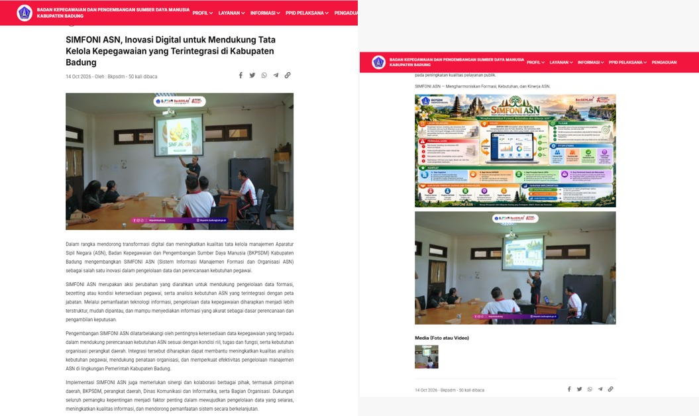
Dalam Website BKPSDM Kabupaten Badung:
https://bkpsdm.badungkab.go.id/berita/75833-simfoni-asn-inovasi-digital-untuk-mendukung-tata-kelola-kepegawaian-yang-terintegrasi-di-kabupaten-badung
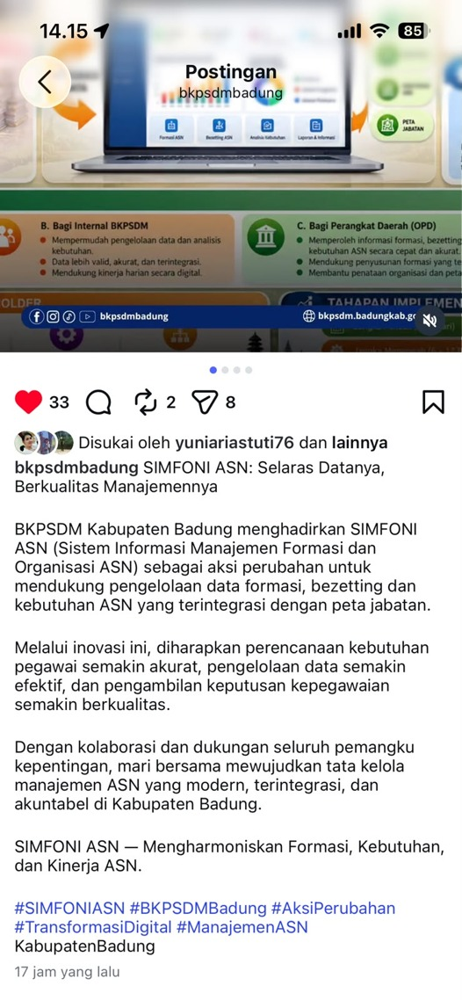
Dalam Instagram BKPSDM Kabupaten Badung:
https://www.instagram.com/p/DeecXMAGRPN/?srtk=cTFyb3ZuZ2F5bDdm
Pelaksanaan diseminasi dan publikasi memperoleh respon positif dari mentor, Tim Efektif, pimpinan, serta perangkat daerah yang terlibat dalam implementasi. Dukungan tersebut tercermin dari partisipasi aktif dalam setiap tahapan implementasi, penyampaian berbagai masukan untuk penyempurnaan platform, serta komitmen untuk mendukung pemanfaatan SIMFONI ASN sebagai media pengelolaan data dan informasi kepegawaian ASN. Masukan yang diperoleh selama proses diseminasi dimanfaatkan sebagai bahan evaluasi sehingga beberapa penyempurnaan dapat dilakukan sebelum implementasi memasuki tahap berikutnya. Selain itu, testimoni dari mentor dan stakeholder menunjukkan bahwa SIMFONI ASN memberikan kemudahan dalam pengelolaan data kepegawaian, penelusuran evidence, serta penyajian informasi yang mendukung monitoring dan pengambilan keputusan. Keberhasilan memperoleh dukungan tersebut menunjukkan bahwa strategi komunikasi yang diterapkan telah berjalan efektif. Diseminasi dan publikasi tidak hanya berhasil memperkenalkan hasil aksi perubahan, tetapi juga membangun kepercayaan serta komitmen bersama untuk mendukung keberlanjutan pengembangan SIMFONI ASN di lingkungan Pemerintah Kabupaten Badung.
Pelaksanaan Aksi Perubahan SIMFONI ASN (Sistem Informasi Manajemen Formasi dan Organisasi ASN) tidak hanya menghasilkan perubahan terhadap tata data kepegawaian ASN, tetapi juga menjadi media pembelajaran kepemimpinan yang memberikan pengalaman nyata dalam mengembangkan kapasitas diri sebagai Administrator. Selama proses implementasi, Project Leader dihadapkan pada berbagai tantangan yang menuntut kemampuan memimpin perubahan, membangun kolaborasi lintas sektor, menjaga integritas dalam pengambilan keputusan, serta mengelola inovasi berbasis teknologi informasi.
Pelaksanaan strategi pengembangan potensi diri dilaksanakan melalui pendekatan learning by doing, yaitu belajar secara langsung melalui proses memimpin perubahan organisasi. Seluruh intervensi yang telah direncanakan dapat diimplementasikan sesuai tahapan pelaksanaan Aksi Perubahan. Untuk lebih jelasnya, capaian pelaksanaan strategi pengembangan potensi diri dapat dilihat pada tabel 6.1 berikut ini:
| No. | Komponen Kompetensi | Strategi Pengembangan | Implementasi | Capaian |
|---|---|---|---|---|
| 1. | Kerja Sama | Meningkatkan kemampuan kolaborasi dengan Tim Efektif dan stakeholder. | Melaksanakan rapat koordinasi, FGD, komunikasi intensif, pembagian peran, dan monitoring Bersama. | Terbangunnya koordinasi dan kolaborasi yang lebih efektif antara Tim Efektif, Dinas Kominfo, Bagian Organisasi, dan Perangkat Daerah pilot project. |
| 2. | Integritas | Memperkuat komitmen terhadap nilai-nilai ASN BerAKHLAK. | Melakukan coaching, refleksi diri, verifikasi data, serta menjaga objektivitas dan akuntabilitas dalam setiap tahapan. | Meningkatnya konsistensi dalam menjaga validitas data, transparansi proses, tanggung jawab, dan akuntabilitas pelaksanaan SIMFONI ASN. |
| No. | Komponen Kompetensi | Strategi Pengembangan | Implementasi | Capaian |
|---|---|---|---|---|
| 3. | Memperkuat kemampuan kepemimpinan perubahan dan inovasi. | Menyusun rencana perubahan, membangun kesamaan persepsi, melaksanakan implementasi, monitoring, evaluasi, dan penyempurnaan sistem. | Mampu mengawal perubahan dari proses pengelolaan data manual menuju proses yang lebih terintegrasi, digital, dan berbasis data. | |
| 4. | Kepemimpinan Transformasional | Mengembangkan kemampuan menggerakkan dan memotivasi stakeholder dalam perubahan. | Memberikan arahan, membangun komitmen bersama, mendorong partisipasi Tim Efektif, serta mengomunikasikan manfaat SIMFONI ASN | Terbangunnya komitmen stakeholder dan kepemimpinan kolaboratif dalam mendukung implementasi SIMFONI ASN. |
| No. | Komponen Kompetensi | Strategi Pengembangan | Implementasi | Capaian |
|---|---|---|---|---|
| 5. | Pengambilan Keputusan Berbasis Data. | Meningkatkan kemampuan analisis dan pengambilan keputusan berbasis evidence. | Memanfaatkan data formasi, bezetting, kebutuhan ASN dan peta jabatan; melakukan validasi serta analisis sebelum menetapkan alternatif solusi. | Pengambilan keputusan menjadi lebih objektif, terukur, dan didukung data yang akurat serta terintegrasi |
| 6. | Pengembangan Berkelanjutan. | Membangun budaya belajar, evaluasi, dan penyempurnaan inovasi secara berkelanjutan | Melakukan pembelajaran mandiri, coaching, evaluasi implementasi, menerima masukan stakeholder, serta menyempurnakan SIMFONI ASN | Terbangunnya komitmen untuk pengembangan SIMFONI ASN secara berkelanjutan dan integrasinya dalam tata kelola manajemen ASN |
Pelaksanaan strategi pengembangan potensi diri menunjukkan bahwa seluruh rencana yang telah disusun dalam RAP dapat diimplementasikan secara konsisten selama pelaksanaan aksi perubahan. Pengembangan kompetensi tidak hanya diperoleh melalui proses pembelajaran formal, tetapi juga melalui pengalaman nyata dalam memimpin perubahan organisasi, mengelola dinamika stakeholder, serta menyelesaikan berbagai tantangan implementasi SIMFONI ASN.
Secara keseluruhan, pelaksanaan strategi pengembangan potensi diri memberikan kontribusi terhadap peningkatan kapasitas kepemimpinan dalam membangun kolaborasi, mengelola perubahan, mengambil keputusan berbasis data, serta menjaga integritas dalam setiap tahapan aksi perubahan. Peningkatan kompetensi tersebut menjadi faktor pendukung keberhasilan implementasi SIMFONI ASN sekaligus memperkuat kesiapan untuk memimpin perubahan organisasi yang berkelanjutan.
Pada tahap penyusunan Rancangan Aksi Perubahan telah dilakukan pemetaan sikap perilaku sebagai dasar penyusunan strategi pengembangan kompetensi. Setelah seluruh tahapan implementasi selesai dilaksanakan, dilakukan asesmen kembali untuk mengetahui perkembangan kompetensi kepemimpinan yang dicapai selama memimpin Aksi Perubahan.
Hasil asesmen menunjukkan adanya peningkatan pada seluruh kompetensi utama yang menjadi fokus pengembangan, yaitu Integritas, Kerja Sama, dan Mengelola Perubahan. Peningkatan tersebut diperoleh melalui pengalaman langsung dalam memimpin tim, mengelola stakeholder, menyelesaikan berbagai tantangan implementasi inovasi digital, serta melakukan evaluasi berkelanjutan terhadap pelaksanaan program.
| Tabel Perbandingan Hasil Sikap Perilaku Kepemimpinan | ||||||
|---|---|---|---|---|---|---|
| Kompetensi | Sebelum Implementasi Aksi Perubahan | Setelah Implementasi Aksi Perubahan | ||||
| Nilai Peserta | Nilai Mentor | Nilai Rata-rata | Nilai Peserta | Nilai Mentor | Nilai Rata-rata | |
| Integritas | 8,00 | 9,00 | 8,70 | 8,92 | 9,00 | 8,98 |
| Kerjasama | 8,00 | 9,00 | 8,70 | 8,90 | 9,00 | 8,97 |
| Mengelola Perubahan | 8,00 | 8,80 | 8,56 | 8,90 | 9,00 | 8,97 |
| Rata-rata Total | 8,00 | 8,93 | 8,65 | 8,91 | 9,00 | 8,97 |
Secara keseluruhan, hasil asesmen akhir menunjukkan bahwa strategi pengembangan potensi diri yang telah dirancang pada tahap awal berhasil diimplementasikan secara efektif. Hal tersebut tercermin dari meningkatnya kualitas kepemimpinan Project Leader dalam aspek integritas, kolaborasi, dan kemampuan mengelola perubahan, yang secara langsung mendukung keberhasilan implementasi Aksi Perubahan SIMFONI ASN di BKPSDM Kabupaten Badung.
Pelaksanaan Aksi Perubahan memberikan pengalaman yang sangat berharga dalam membentuk karakter kepemimpinan yang adaptif, inovatif, dan kolaboratif. Sebagai Project Leader, penulis menyadari bahwa keberhasilan suatu inovasi tidak hanya ditentukan oleh kemampuan teknis, tetapi juga oleh kemampuan membangun kepercayaan, menggerakkan tim, serta menjaga komitmen seluruh pemangku kepentingan terhadap tujuan bersama.
Proses implementasi SIMFONI ASN memperkuat keyakinan bahwa seorang pemimpin perubahan harus mampu menjadi penggerak transformasi, mampu beradaptasi terhadap perkembangan teknologi, serta menjadikan kolaborasi sebagai kekuatan utama dalam menciptakan pelayanan publik yang lebih efektif. Pengalaman tersebut menjadi modal penting bagi penulis untuk terus mengembangkan kompetensi kepemimpinan secara berkelanjutan serta mendorong lahirnya inovasi-inovasi lain yang memberikan nilai tambah bagi BKPSDM Kabupaten Badung dan masyarakat.
Pelaksanaan Aksi Perubahan SIMFONI ASN (Sistem Informasi Manajemen Formasi dan Organisasi ASN) melalui Pengembangan SIPETIR merupakan wujud nyata implementasi kepemimpinan perubahan dan mendukung pengelolaa data kepegawaian di BKPSDM Kabupaten Badung. Aksi perubahan ini lahir sebagai solusi dalam menjawab tantangan pengelolaan manajemen ASN yang semakin dinamis, adaptif, dan berbasis data.
Melalui tahapan yang telah direncanakan, mulai dari persiapan, Pembentukan tim efektif. Menyusun rencana kerja, Pelaksanaan FGD dengan Programmer dan Tim Efektif serta Pejabat Pengelola Kepegawaian di beberapa Perangkat Daerah, Penyusunan SOP, Perancangan dan koding modul serta coaching, uji coba sampai evaluasi kendala dan hambatan yang dihadapi, seluruh target jangka pendek berhasil dilaksanakan sesuai rencana. Implementasi tersebut menghasilkan capaian penting, antara lain pengembangan Modul Formasi, Bezetting, dan Analisis Kebutuhan ASN berbasis Peta Jabatan pada SIPETIR BKPSDM Kabupaten Badung sebagai sistem pendukung keputusan (decision support system) yang mampu menyajikan informasi kepegawaian secara terintegrasi, real time, dan berbasis bukti (evidence-based decision making). Dengan pengembangan ini dapat memperkuat implementasi Sistem Merit, mendukung penerapan SPBE, meningkatkan efektivitas perencanaan kebutuhan ASN, serta mempercepat proses penyusunan kebijakan pengadaan, redistribusi, mutasi, promosi, dan pengembangan kompetensi ASN.
Selain menghasilkan perubahan pada aspek organisasi, pelaksanaan aksi perubahan juga memberikan dampak terhadap peningkatan kapasitas kepemimpinan Project Leader. Pengalaman memimpin implementasi inovasi memperkuat kompetensi dalam aspek integritas, kerja sama, dan kemampuan mengelola perubahan. Penguatan kompetensi tersebut menjadi modal penting dalam membangun budaya kerja yang adaptif, kolaboratif, inovatif, dan berorientasi pada peningkatan kualitas pelayanan publik.
Keberhasilan implementasi aksi perubahan SIMFONI ASN menunjukkan bahwa transformasi digital dalam pengelolaan data kepegawaian dapat diwujudkan melalui kepemimpinan yang visioner, dukungan stakeholder, pemanfaatan teknologi informasi, serta komitmen bersama untuk menjaga keberlanjutan inovasi. Dengan demikian, SIMFONI ASN tidak hanya menjadi inovasi jangka pendek dalam rangka Pelatihan Kepemimpinan Administrator, tetapi juga menjadi fondasi bagi pengembangan SIPETIR yang berkelanjutan di Kabupaten Badung.
Berdasarkan pelaksanaan Aksi Perubahan SIMFONI ASN (Sistem Informasi Manajemen Formasi dan Organisasi ASN) melalui pengembangan Modul Formasi, Bezetting, dan Analisis Kebutuhan ASN berbasis Peta Jabatan pada SIPETIR, terdapat beberapa hal yang perlu menjadi perhatian dalam rangka menjamin keberlanjutan dan optimalisasi inovasi, yaitu:
Dengan demikian, keberlanjutan SIMFONI ASN diharapkan tidak hanya ditentukan oleh keberhasilan pengembangan aplikasinya, tetapi juga oleh konsistensi pemutakhiran data, kesiapan sumber daya manusia, dukungan pimpinan, kolaborasi antar stakeholder, serta komitmen untuk melakukan penyempurnaan secara berkelanjutan. Melalui langkah tersebut, SIMFONI ASN dapat berkembang menjadi instrumen pendukung pengelolaan manajemen ASN yang terintegrasi, akurat, adaptif, transparan, dan berbasis data di lingkungan Pemerintah Kabupaten Badung.
| Nama Peserta | : | I Made Adnyana, S.STP, M.AP |
| NIP. | : | 197906101998101001 |
| Jabatan | : | Kepala Bidang Pengadaan, Pemberhentian dan Informasi Kepegawaian ASN pada Badan Kepegawaian dan Pengembangan Sumber Daya Manusia Kabupaten Badung |
| Nama Mentor | : | I Wayan Putra Yadnya, SKM, M.Si |
| NIP. | : | 196810111993031008 |
| Jabatan | : | Kepala Badan Kepegawaian dan Pengembangan Sumber Daya Manusia Kabupaten Badung |
| Gagasan Perubahan | : | SIMFONI (Sistem Informasi Manajemen Formasi dan Organisasi) ASN |
| No. | Hari/Tanggal | Catatan Bimbingan | Dokumentasi | Paraf |
|---|---|---|---|---|
| 1. | Kamis, 23 Juli 2026 | Bimbingan dan konsultasi Membangun Komitmen Bersama | 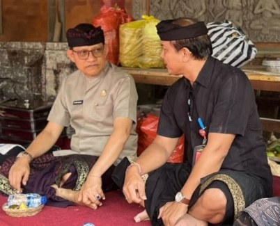 |
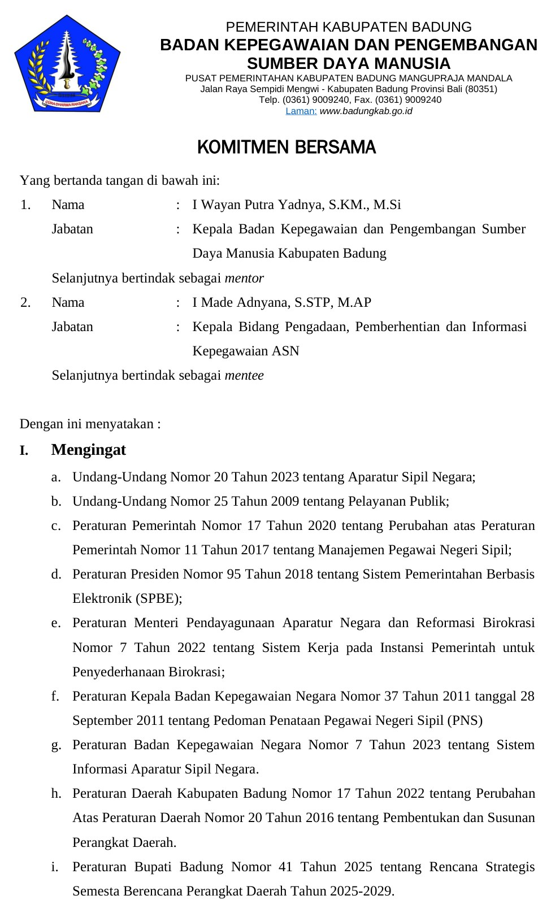
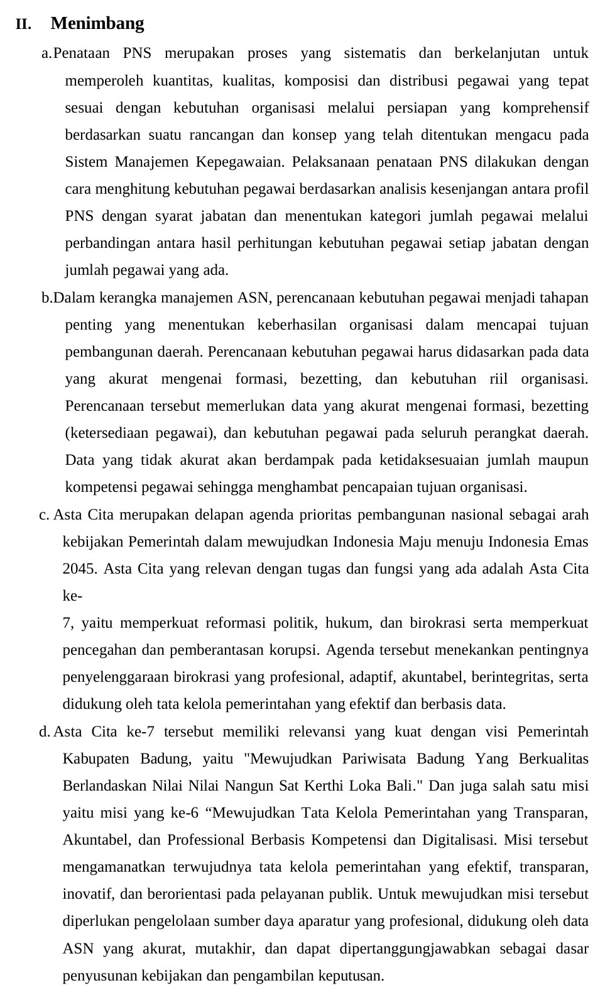
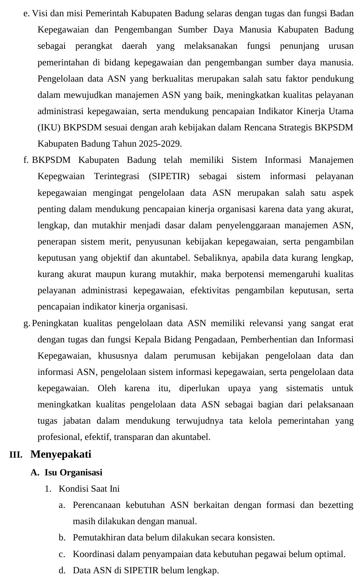
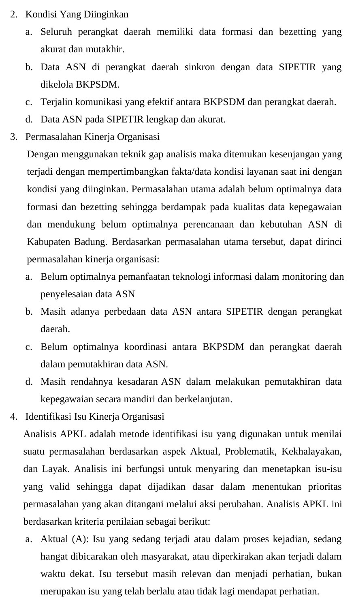
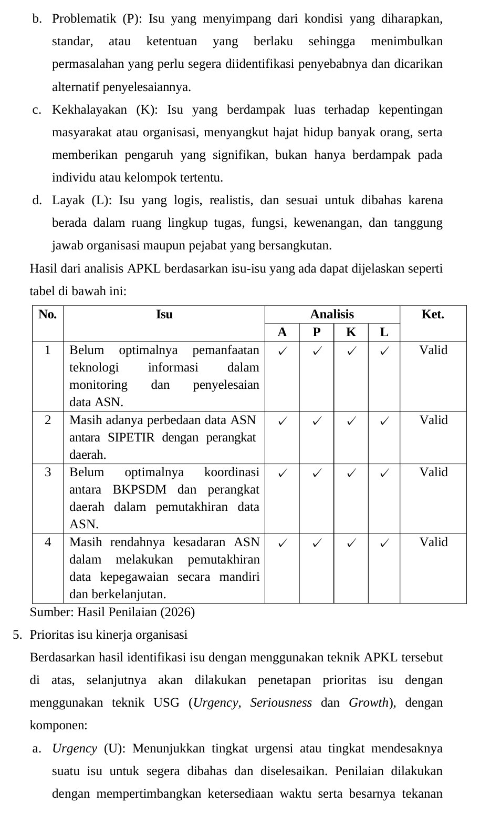
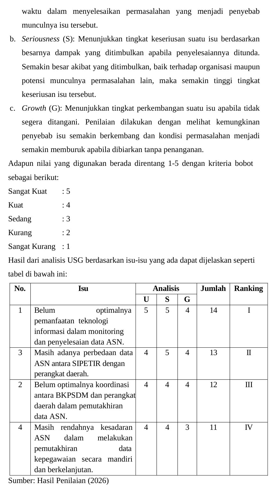
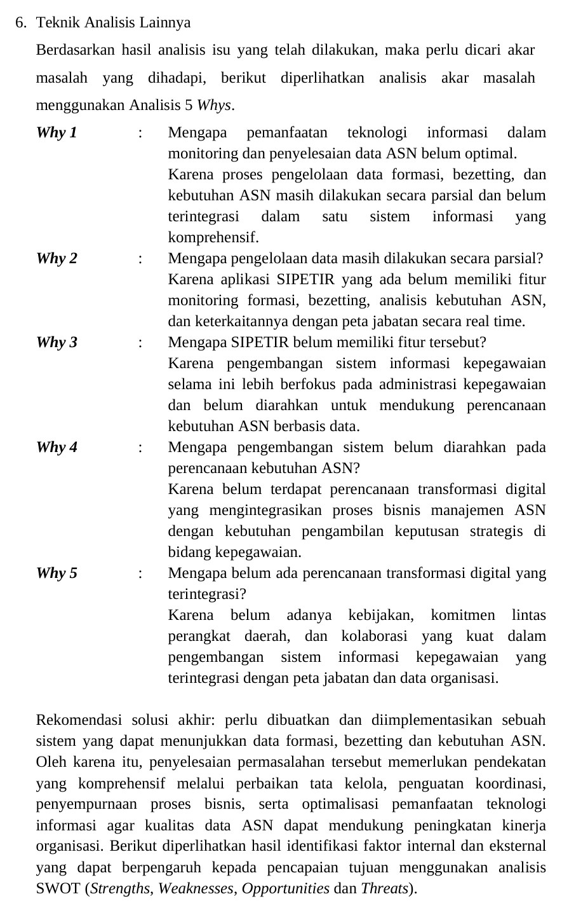
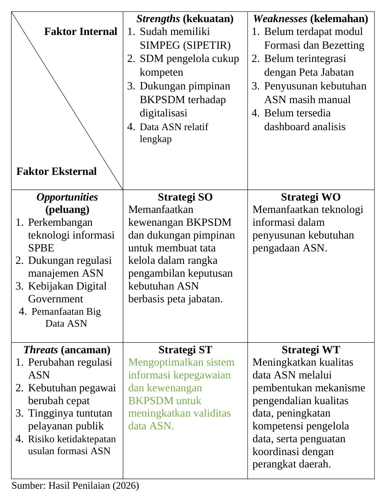
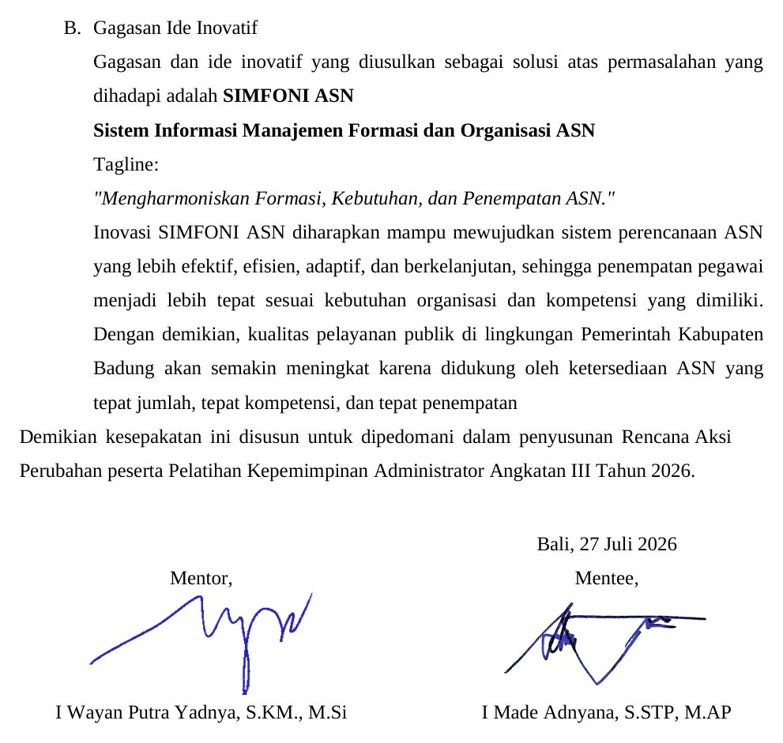
| Nama Peserta | : | I Made Adnyana, S.STP, M.AP |
| NIP. | : | 197906101998101001 |
| Jabatan | : | Kepala Bidang Pengadaan, Pemberhentian dan Informasi Kepegawaian ASN pada Badan Kepegawaian dan Pengembangan Sumber Daya Manusia Kabupaten Badung |
| Nama Mentor | : | I Wayan Putra Yadnya, SKM, M.Si |
| NIP. | : | 196810111993031008 |
| Jabatan | : | Kepala Badan Kepegawaian dan Pengembangan Sumber Daya Manusia Kabupaten Badung |
| Gagasan Perubahan | : | SIMFONI (Sistem Informasi Manajemen Formasi dan Organisasi) ASN |
| No. | Hari/Tanggal | Catatan Bimbingan | Dokumentasi | Paraf |
|---|---|---|---|---|
| 1. | Rabu, 5 Agustus 2026 | Bimbingan dan konsultasi penyusunan Rancangan Aksi Perubahan | ||
| 2. | Rabu, 26 Agustus 2026 | Melaporkan hasil seminar RAP dan kosultasi pelaksanaan aksi perubahan SIMFONI ASN | 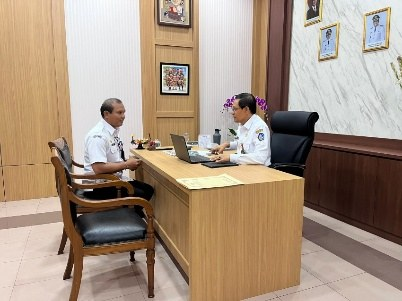 | |
| 3. | Senin, 12 Oktober 2026 | Melaporkan hasil akhir implementasi aksi perubahan | 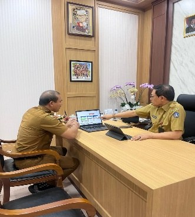 |
| Nama Peserta | : | I Made Adnyana, S.STP, M.AP |
| NIP. | : | 197906101998101001 |
| Coach | : | I Made Gde Partha Kesuma Setiawan, S.STP., M.Si. |
| NIP. | : | 197802011997111002 |
| No. | Hari, Tanggal | Hasil Bimbingan | Dokumentasi | Paraf |
|---|---|---|---|---|
| 1. | Kamis, 30 Juli 2026 | Pengarahan awal dan diharapkan menyusun latar belakang, analisis isu dan tawaran solusinya. | ||
| 2. | Jumat, 31 Juli 2026 | Sesuaikan penulisan dengan Outline RAP | 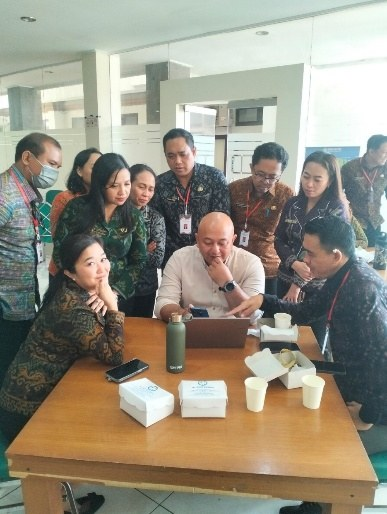 | |
| 3. | Sabtu, 1 Agustus 2026 | Tidak perlu menggunakan analisis fishbone karena sudah ada 5 Whys dan kerangka berfikir bisa diisi tapi bisanya sudah ada pada GAP Analisis | 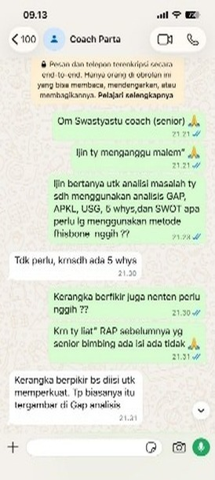 | |
| 4. | Minggu, 2 Agustus 2026 | Konsultasi RAP | 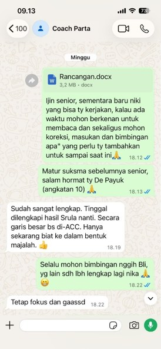 | |
| 5. | Senin, 3 Agustus 2026 | Disetujui untuk disampaikan pada Seminar RAP Pelatihan Kepemimpinan Administrator | ||
| 6. | Minggu, 20 September 2026 | Konsultasi LAP (Sesuaikan sistemtika penulisan sesuai pedoman) | 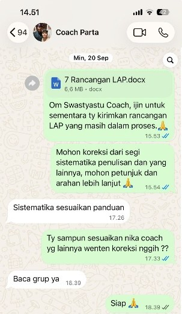 | |
| 7. | Jumat, 25 September 2026 | Konsultasi LAP (Setiap capaian aksi perubahan mengandung 5W 1H) | ||
| 8. | Selasa, 13 Oktober 2026 | Disetujui dalam format majalah dengan perbaikan sedikit pada saran. |